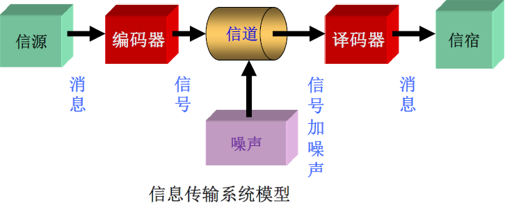
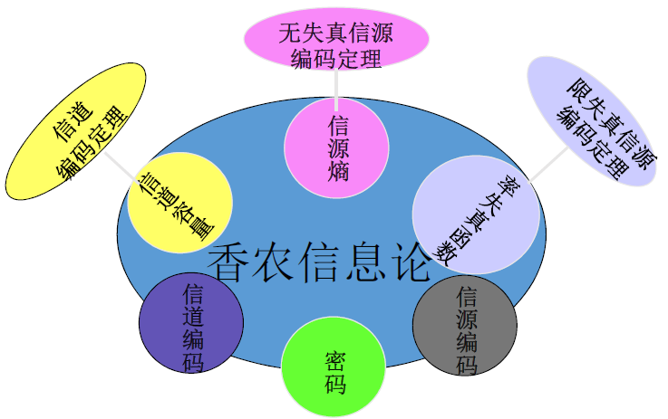
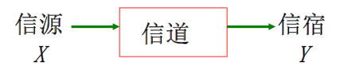
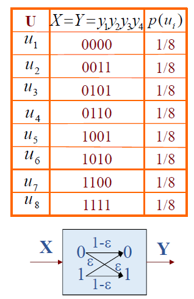
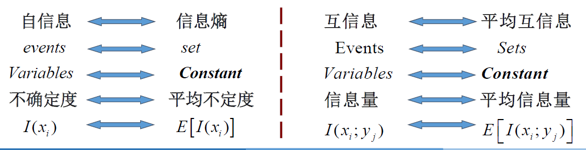
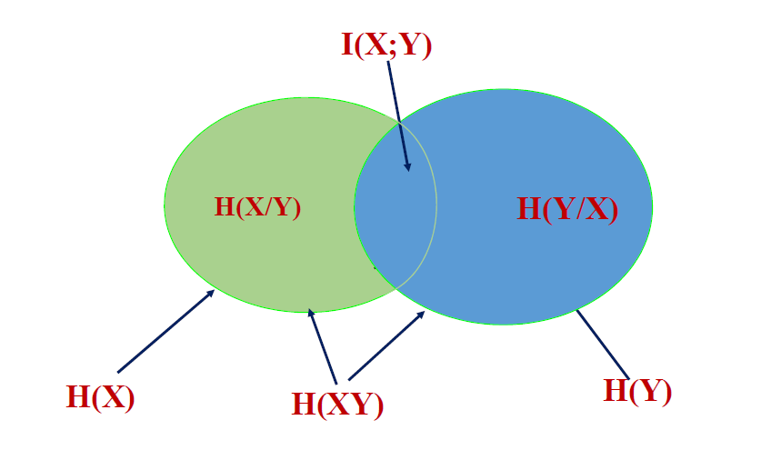
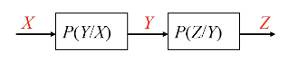
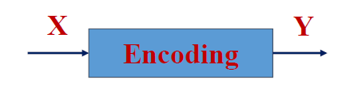
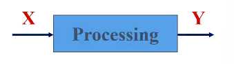
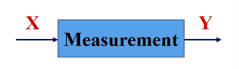

信息论基础
主要内容：信息论基本概念、信源模型、自信息、互信息、信息熵、马尔可夫信源等
信息
信息 ：所获得的新知识，信息是用来减少随机不确定性的东西。- -信息论创始人香农
信息论中最基本、最重要的概念（消息的同义词）
哲学家：“信息是物质成分和意识成分按完全特殊的方式融合起来的产物”。
数学家：“信息是使概率分布发生改变的东西”。
信息论：信息是事物运动状态或存在方式的不确定性的描述。
运动状态：事物在空间 上所展现的形状和态势 。
存在方式：事物在时间 上所呈现出的过程和规律 。
Ex1：简述消息、信号、信息的区别和联系
信号 ：是信息的物理表达层 ，是三个层次中最具体的层次。它是一个物理量，是一个载荷信息的实体，可测量、可描述、可显示（电信号、光信号、声音信号等），是消息的运载工具。
消息 ：是信息的载体 ，是用文字、符号、数据、语言、图片、图像等形式，把客观事物运动和主观思维活动的状态表达出来。
信息 ：它是更高层次哲学上的抽象，是信号与消息的更高表达层次 ，可以定量的描述。信息、物质和能量是构成一切系统的三大要素。
三个层次中，信号最具体，信息最抽象。它们三者之间的关系是哲学上的内涵与外延的关系。
信号 ⇒ \Rightarrow ⇒ ⇒ \Rightarrow ⇒
信息的分类
信息的分类：语法、语义、语用 构成语言的三个基本方面，对于中间包含的信息按照性质分类
语法信息 ：最基本也是最抽象的类型是语法信息，也是迄今为止在理论上研究得最多的类型。
语义信息
语用信息
Ex2：文献调研
有一个情报部门，其主要任务是对经济情报进行收集、整理与分析以提供给决策机构。
该部门设三个组：
信息收集组将收集到的资料按中文、英文或其他文字、明文、密文进行分类；
信息处理组根据资料的性质进行翻译或破译得到资料的含义
信息分析组根据资料从中挑选出有价值的情报提交给决策机构。
Ex3：爱因斯坦方程 E = m c 2 E=mc^2 E = m c 2
公式的语法信息：英文字母和数学符号之间的特定排列
公式的语义信息：E E E m m m c c c
公式的语用信息：公式的含义，试验的验证证实逻辑合理性——通过改变原子核的质量状态来获得巨大的原子核能。
信息的量化
信息的度量（信息量） ：和不确定性消除的程度有关，消除多少不确定性，就获得多少信息量。
不确定性 ：随机性，用概率论和随机过程来测度不确定性的大小。
概率 ↓ \downarrow ↓ ↑ \uparrow ↑ ↑ \uparrow ↑
概率 ↑ \uparrow ↑ ↓ \downarrow ↓ ↓ \downarrow ↓
概率信息/窄义信息 ：从事物的客观性出发讨论问题，而与事物的主观性无缘。
哈特莱早在 20 世纪 20 年代就提出用对数作为信息量的测度，信息量的计算式可表示为：
I ( x k ) = log 2 1 p k = − log 2 p k I\left(x_k\right)=\log _2 \frac{1}{p_k}=-\log _2 p_k
I ( x k ) = log 2 p k 1 = − log 2 p k
p k p_k p k x k x_k x k
Ex4：有八只灯泡，只知其中有一只灯丝已断，用一节电池来测，问最少需测几次可找到坏灯泡（解除其不定度）？
解：
8 8 8 p ( x ) = 1 / 8 p(x)=1 / 8 p ( x ) = 1 / 8
− log 2 p ( x ) = log 2 8 = 3 bit -\log _2 p(x)=\log _2 8=3 \text { bit }
− log 2 p ( x ) = log 2 8 = 3 bit
二元判断 ：每一次判断后可得到一个是/否信息。
二元信息 。用来解除不定度的最小单位，也即信息量的最小单位——比特（bit） 。
log 2 2 = 1 bit \log _2 2=1 \text { bit }
log 2 2 = 1 bit
每次测量可以解除 1 bit 1 \ \text{bit} 1 bit 3 3 3
信息科学与信息论
在人类文明史中，信息传输和传播手段经历了五次重大变革：
①语言的产生。
②文字的产生。
③印刷术的发明。
④电报、电话的发明。
⑤近现代，计算机技术与通信技术相结合，带来了信息技术革命性发展。
信息科学 是以信息 作为主要研究对象 ，以信息过程的运动规律 作为主要研究内容 ，以信息科学方法论 作为主要研究方法 ，以扩展人的信息功能（全部信息功能形成的有机整体就是智力功能）作为主要研究目标的一门科学。其主要内容包括：
阐明信息的概念和本质（哲学信息论）；
探讨信息的度量和变换（基本信息论）；
研究信息的提取方法（识别信息论）；
澄清信息的传递规律（通信理论）；
探明信息的处理机制（智能理论）；
探究信息的再生理论（决策理论）；
阐明信息的调节原则（控制理论）；
完善信息的组织理论（系统理论）
⋯ ⋯ \cdots \cdots ⋯ ⋯
历史：
1924 年，奈奎斯特（Harry Nyquist）（1889-1976）解释了信号带宽和信息速率之间的关系 。
1928 年，哈特莱（Hartley）首先提出了用对数度量信息 的概念。
20 世纪30 年代，新的调制方式，如调频、调相、单边带调制、脉冲编码调制和增量调制的出现 ，使人们对信息能量、带宽和干扰 的关系有了进一步的认识。
1936 年，阿姆斯特朗（Edwin·Armstrong）指出增大带宽可以使抗干扰能力加强 ，并根据这一思想提出了宽频移的频率调制方法 。
1939 年，达得利（Homer Dudley）发明了带通声码器 ，指出通信所需带宽至少同待传送消息的带宽应该一样 。声码器是最早的语音数据压缩系统 。这一时期还诞生了无线电广播和电视广播 。
1941～1944 年，香农（Shannon）在对通信和密码 进行深入研究，用概率论和数理统计的方法 系统地讨论了通信的基本问题 ，得出了几个重要而带有普遍意义的结论：
阐明通信系统传递的对象；
提出了信息熵的概念；
指出通信系统的中心问题；
指明了解决问题的方法。
以上这些成果 1948 年以“通信的数学理论”（A mathematical theory of communication） 为题公开发表，标志着信息论的正式诞生。
维纳（Wiener）在研究火控系统和人体神经系统时，提出了在干扰作用下的信息最佳滤波理论 ，成为信息论的一个重要分支。
50 年代，信息论在学术界引起了巨大反响。1951年，美国无线电工程师协会（IRE）成立了信息论组，并于 1955 年正式出版了信息论汇刊 。
1959 年，香农发表了“保真度准则下的离散信源编码定理”（Coding theorems for a discrete source with a fidelity criterion）系统地提出了信息率失真理论（rate-distortion theory） 。为信源压缩编码的研究 奠定了理论基础。
60 年代，信道编码技术有了较大发展，尤其，以 Viterbi 译码为代表的译码方法被美国卫星通信系统采用后，使它成为信息论的又一重要分支。
1961 年，香农的重要论文“双路通信信道”开拓了网络信息论 的研究。
1970 年以来，随着卫星通信、计算机通信网的迅速发展，网络信息理论的研究成为当前信息论的中心研究课题之一。
信息论
信息论研究对象 ：信息论是一门应用概率论、随机过程、数理统计和近世代数的方法，来研究信息的传输、提取和处理系统中一般规律的工程学科。

信息论研究目的：提高信息系统的可靠性、有效性和安全性以便达到系统最优化。
信息论研究内容 ：主要是香农信息论或狭义信息论。

① 香农信息论或狭义信息论 ：应用近代概率统计方法研究信息的基本性质及度量方法，研究信息传输、处理等一般规律的学科。
② 一般信息论 ：主要是研究信息传输和处理问题。除了香农基本理论之外，还包括噪声理论、信号滤波和预测、统计检测与估计理论、调制理论（维纳）。
③ 广义信息论 ：概括说来，凡是能够用广义通信系统模型描述的过程或系统，都能用信息基本理论来研究。
信息论研究和学习意义:
一种理论方法：帮助工程师从全局的观点观察和设计信息传输系统
一种指导原则：提供一系列支持信息传输实践的原则和理论界，指导信息传输系统最优化设计
Ex5：13 个外观完全一样的小球，其中有 1 个小球重量与其余 12 个不同，有一架
解：
13 13 1 3 p ( x ) = 1 / 13 p(x)=1 / 13 p ( x ) = 1 / 1 3
判断轻重，需要增加一个二元判断
− log 2 p ( x ) + 1 = log 2 13 + log 2 2 = log 2 13 + log 2 2 = log 2 26 bit -\log _2 p(x)+1=\log _2 13+\log _2 2=\log _2 13+\log _2 2=\log _2 26 \text { bit }
− log 2 p ( x ) + 1 = log 2 1 3 + log 2 2 = log 2 1 3 + log 2 2 = log 2 2 6 bit
天枰有三种状态（平衡，左倾，右倾），每称一次可以解除不确定度 log 2 3 bit \log _2 3 \ \text { bit } log 2 3 bit
至少需要测量 log 2 26 bit log 2 3 bit = log 3 26 \frac{\log _2 26 \text { bit }}{\log _2 3 \ \text { bit }}=\log _3 26 l o g 2 3 bit l o g 2 2 6 bit = log 3 2 6
又
log 3 9 < log 3 26 < log 3 27 \log _3 9<\log _3 26<\log _3 27
log 3 9 < log 3 2 6 < log 3 2 7
只需称三次一定可以完全解除不确定度，少于三次不可能求解（可行性评估）
三门问题（蒙提霍尔（Monty Hall）问题） ：在你眼前有 3 3 3 A A A B B B C C C 3 3 3 1 1 1 A A A C C C A A A B B B
Shannon
Claude El-wood Shannon（1916-2001）美国科学家， 信息论创始人。
教育背景及工作经历：
1916年4月30日出生于美国密歇根州。
1936年毕业于密歇根大学并获得数学和电子工程学士学位。
1940年分别获得麻省理工学院电子工程硕士学位和数学博士学位。
1941年加入贝尔实验室数学部。
1956年成为麻省理工学院（MIT）客座教授，并于1958年成为终生教授，1978年成为名誉教授。
2001年2月26日去世，享年84岁。
学术成就：
创立信息论
1940年在普林斯顿高级研究所（The Institute for Advanced Study at Princeton）期间开始思考信息论与有效通信系统的问题。经过8年的努力，香农在1948年6月和10月在《贝尔系统技术杂志》（Bell System Technical Journal）上连载发表了具有深远影响的论文《通讯的数学原理》 。1949年，香农又在该杂志上发表了另一著名论文《噪声下的通信》 。在这两篇论文中，香农阐明了通信的基本问题，给出了通信系统的模型，提出了信息量的数学表达式，并解决了信道容量、信源统计特性、信源编码、信道编码等一系列基本技术问题。两篇论文成为了信息论的奠基性著作。
奠定了数字电路的理论基础
香农硕士论文题目是《A Symbolic Analysis of Relay and Switching Circuits》（继电器与开关电路的符号分析） 。在该论文中，香农注意到电话交换电路与布尔代数之间的类似性，即把布尔代数的“真”与“假”和电路系统的“开”与“关”对应起来，并用1和0表示。于是他用布尔代数分析并优化开关电路，这就奠定了数字电路的理论基础。哈佛大学的Howard Gardner教授说，“这可能是本世纪最重要、最著名的一篇硕士论文。”1940年香农在MIT获得数学博士学位，而他的博士论文却是关于人类遗传学的，题目是《An Algebra for Theoretical Genetics》（理论遗传学的代数学） 。这说明香农的科学兴趣十分广泛，后来他在不同的学科方面发表过许多有影响的文章。
信源模型
信源种类：
汉语 ：字构成词，词构成句子字母：字母构成单词，单词构成句子
图像：像素点构成
声音：采样值构成
符号（基本消息） ：字，字母，像素点，采样值。如 a a a b b b c c c ⋯ \cdots ⋯
符号集合（基本消息集合） ：如 { a , b , c , ⋯ , z } \{a,b,c,\cdots,z\} { a , b , c , ⋯ , z }
符号串（消息） ：如 Hello World
信源发出消息的过程 ⇔ \Leftrightarrow ⇔
对认识主体来说，信源在某一时刻输出的符号是随机的，可以用概率统计的数学方法描述
其余分类：
单符号信源 ：信源每次输出一个符号，用离散随机变量描述多符号信源 ：信源每次输出多个符号（符号序列），用离散随机矢量描述离散信源 ：信源符号取值离散，包括单符号和多符号信源连续信源 ：信源符号取值连续，用随机过程描述
单符号离散信源的数学模型
[ X P ( X ) ] = { x 1 , x 2 , ⋯ , x i , ⋯ , x n p ( x 1 ) , p ( x 2 ) , ⋯ , p ( x i ) , ⋯ , p ( x n ) } p ( x i ) ≥ 0 ∑ i = 1 n p ( x i ) = 1 \left[\begin{array}{c}
\boldsymbol{X} \\
P(\boldsymbol{X})
\end{array}\right]=\left\{\begin{array}{cccccc}
&x_1, \quad &x_2, &\cdots, \quad &x_i, &\cdots, \quad &x_n \\
&p\left(x_1\right), &p\left(x_2\right), &\cdots, &p\left(x_i\right), &\cdots, &p\left(x_n\right)
\end{array}\right\} \quad p\left(x_i\right) \geq 0 \quad \sum_{i=1}^n p\left(x_i\right)=1
[ X P ( X ) ] = { x 1 , p ( x 1 ) , x 2 , p ( x 2 ) , ⋯ , ⋯ , x i , p ( x i ) , ⋯ , ⋯ , x n p ( x n ) } p ( x i ) ≥ 0 i = 1 ∑ n p ( x i ) = 1
X \boldsymbol{X} X
p ( x i ) p(x_i) p ( x i )
单符号连续信源的数据模型
[ X P ( X ) ] = [ x ∈ ( a , b ) p ( x ) ] ∫ a b p ( x ) d x = 1 p ( x ) ≥ 0 \left[\begin{array}{c}
\boldsymbol{X} \\
P(\boldsymbol{X})
\end{array}\right]=\left[\begin{array}{c}
x \in(a, b) \\
p(x)
\end{array}\right] \quad \int_a^b p(x) d x=1 \quad p(x) \geq 0
[ X P ( X ) ] = [ x ∈ ( a , b ) p ( x ) ] ∫ a b p ( x ) d x = 1 p ( x ) ≥ 0
X \boldsymbol{X} X
p ( x ) p(x) p ( x )
多符号离散信源的数学模型
[ X N P ( α i ) ] = [ α 1 , α 2 , ⋯ α q N P ( α 1 ) , P ( α 2 ) , ⋯ , P ( α q N ) ] \left[\begin{array}{l}
X^N \\
P\left(\alpha_i\right)
\end{array}\right]=\left[\begin{array}{cccc}
&\alpha_1, &\alpha_2, &\cdots &\alpha_{q^N} \\
& P\left(\alpha_1\right), &P\left(\alpha_2\right), &\cdots, &P\left(\alpha_{q^N}\right)
\end{array}\right]
[ X N P ( α i ) ] = [ α 1 , P ( α 1 ) , α 2 , P ( α 2 ) , ⋯ ⋯ , α q N P ( α q N ) ]
α i = ( a i 1 a i 2 ⋯ a i N ) ( i 1 , i 2 , ⋯ i N = 1 , 2 , ⋯ q ) \alpha_i=\left(a_{i_1} a_{i_2} \cdots a_{i_N}\right) \quad\left(i_1, i_2, \cdots i_N=1,2, \cdots q\right) α i = ( a i 1 a i 2 ⋯ a i N ) ( i 1 , i 2 , ⋯ i N = 1 , 2 , ⋯ q )
P ( α i ) = P ( a i 1 a i 2 ⋯ a i N ) = ∏ i k = 1 N P ( a i k ) P\left(\alpha_i\right)=P\left(a_{i_1} a_{i_2} \cdots a_{i_N}\right)=\prod_{i_k=1}^N P\left(a_{i_k}\right) P ( α i ) = P ( a i 1 a i 2 ⋯ a i N ) = ∏ i k = 1 N P ( a i k )
∑ i = 1 q N P ( α i ) = ∑ ∏ i k = 1 N P ( a i k ) = 1 \sum_{i=1}^{q^N} P\left(\alpha_i\right)=\sum \prod_{i_k=1}^N P\left(a_{i_k}\right)=1
i = 1 ∑ q N P ( α i ) = ∑ i k = 1 ∏ N P ( a i k ) = 1
自信息
定义 ：若一个随机事件的概率为 p ( x i ) p(x_i) p ( x i )
I ( x i ) = f ( p ( x i ) ) = − log p ( x i ) I\left(x_i\right)=f\left(p\left(x_i\right)\right)=-\log p\left(x_i\right)
I ( x i ) = f ( p ( x i ) ) = − log p ( x i )
f ( ⋅ ) f(\cdot) f ( ⋅ )
性质 ：
含义 ：
当事件 x i x_i x i x i x_i x i
当事件 x i x_i x i x i x_i x i
单位 ：取决于对数的底
底
单位
表示
2 2 2 比特
bit \text {bit} bit
e e e 奈特
nat \text {nat} nat
10 10 1 0 哈特
hat \text {hat} hat
1 nat = 1.44 bit , 1 hat = 3.32 b i t 1 \text { nat }=1.44 \text { bit }, 1 \text { hat }=3.32 \mathrm{bit}
1 nat = 1 . 4 4 bit , 1 hat = 3 . 3 2 b i t
联合自信息
二维联合集 X Y \boldsymbol{XY} X Y x i y j x_iy_j x i y j
I ( x i y j ) = − log p ( x i y j ) I\left(x_i y_j\right)=-\log p\left(x_i y_j\right)
I ( x i y j ) = − log p ( x i y j )
其中
[ X Y P ( X Y ) ] = { x 1 y 1 , ⋯ , x 1 y m , x 2 y 1 , ⋯ , x 2 y m , ⋯ , x n y 1 , ⋯ , x n y m p ( x 1 y 1 ) , ⋯ , p ( x 1 y m ) , p ( x 2 y 1 ) , ⋯ , p ( x 2 y m ) , ⋯ , p ( x n y 1 ) , ⋯ p ( x n y m ) } 0 ≤ p ( x i y j ) ≤ 1 ∑ i = 1 n ∑ j = 1 m p ( x i y j ) = 1 \left[\begin{array}{c}
X Y \\
P(X Y)
\end{array}\right]=\left\{\begin{array}{cccccccccc}
&x_1 y_1, &\cdots, &x_1 y_m, &x_2 y_1, &\cdots, &x_2 y_m, &\cdots, &x_n y_1, &\cdots, &x_n y_m \\
&p\left(x_1 y_1\right), &\cdots, &p\left(x_1 y_m\right), &p\left(x_2 y_1\right), &\cdots, &p\left(x_2 y_m\right), &\cdots, &p\left(x_n y_1\right), &\cdots &p\left(x_n y_m\right)
\end{array}\right\} \quad 0 \leq p\left(x_i y_j\right) \leq 1 \quad \sum_{i=1}^n \sum_{j=1}^m p\left(x_i y_j\right)=1
[ X Y P ( X Y ) ] = { x 1 y 1 , p ( x 1 y 1 ) , ⋯ , ⋯ , x 1 y m , p ( x 1 y m ) , x 2 y 1 , p ( x 2 y 1 ) , ⋯ , ⋯ , x 2 y m , p ( x 2 y m ) , ⋯ , ⋯ , x n y 1 , p ( x n y 1 ) , ⋯ , ⋯ x n y m p ( x n y m ) } 0 ≤ p ( x i y j ) ≤ 1 i = 1 ∑ n j = 1 ∑ m p ( x i y j ) = 1
条件自信息
二维联合集 X Y \boldsymbol{XY} X Y x i y j x_iy_j x i y j
I ( x i / y j ) = − log 2 p ( x i / y j ) I\left(x_i / y_j\right)=-\log _2 p\left(x_i / y_j\right)
I ( x i / y j ) = − log 2 p ( x i / y j )
关系计算
I ( x i y j ) = − log 2 p ( x i ) p ( y j / x i ) = I ( x i ) + I ( y j / x i ) = − log 2 p ( y j ) p ( x i / y j ) = I ( y j ) + I ( x i / y j ) \begin{aligned}
I\left(x_i y_j\right) & =-\log _2 p\left(x_i\right) p\left(y_j / x_i\right)=I\left(x_i\right)+I\left(y_j / x_i\right) \\
& =-\log _2 p\left(y_j\right) p\left(x_i / y_j\right)=I\left(y_j\right)+I\left(x_i / y_j\right)
\end{aligned}
I ( x i y j ) = − log 2 p ( x i ) p ( y j / x i ) = I ( x i ) + I ( y j / x i ) = − log 2 p ( y j ) p ( x i / y j ) = I ( y j ) + I ( x i / y j )
当 X X X Y Y Y
I ( x i y j ) = − log 2 p ( x i ) − log 2 p ( y j ) = I ( x i ) + I ( y j ) I\left(x_i y_j\right)=-\log _2 p\left(x_i\right)-\log _2 p\left(y_j\right)=I\left(x_i\right)+I\left(y_j\right)
I ( x i y j ) = − log 2 p ( x i ) − log 2 p ( y j ) = I ( x i ) + I ( y j )
Ex6：某地男青年中有 25 % 25\% 2 5 % 75 % 75\% 7 5 %
解：
设随机事件有
x i x_i x i y i y_i y i
则
x i / y i x_i/y_i x i / y i
y i / x i y_i/x_i y i / x i
其中 p ( x i ) = 1 4 p(x_i)=\frac{1}{4} p ( x i ) = 4 1 p ( y i / x i ) = 3 4 p(y_i/x_i)=\frac{3}{4} p ( y i / x i ) = 4 3 p ( y i ) = 1 2 p(y_i)=\frac{1}{2} p ( y i ) = 2 1
p ( x i / y j ) = p ( x i y j ) p ( y j ) = p ( y j / x i ) p ( x i ) p ( y j ) = 3 8 p\left(x_i / y_j\right)=\frac{p\left(x_i y_j\right)}{p\left(y_j\right)}=\frac{p\left(y_j / x_i\right) p\left(x_i\right)}{p\left(y_j\right)}=\frac{3}{8}
p ( x i / y j ) = p ( y j ) p ( x i y j ) = p ( y j ) p ( y j / x i ) p ( x i ) = 8 3
I ( x i / y j ) = − log 2 p ( x i / y j ) = 1.415 b i t I\left(x_i / y_j\right)=-\log _2 p\left(x_i / y_j\right)=1.415 b i t
I ( x i / y j ) = − log 2 p ( x i / y j ) = 1 . 4 1 5 b i t
互信息

[ X P ] = { x 1 , x 2 , ⋯ , x i , ⋯ , x n p ( x 1 ) , p ( x 2 ) , ⋯ , p ( x i ) , ⋯ , p ( x n ) } ∑ i p ( x i ) = 1 \left[\begin{array}{c}
X \\
P
\end{array}\right]=\left\{\begin{array}{cccccc}
&x_1, & x_2, &\cdots, & x_i, &\cdots, & x_n \\
&p\left(x_1\right), &p\left(x_2\right), &\cdots, &p\left(x_i\right), &\cdots, &p\left(x_n\right)
\end{array}\right\} \quad \sum_i p\left(x_i\right)=1
[ X P ] = { x 1 , p ( x 1 ) , x 2 , p ( x 2 ) , ⋯ , ⋯ , x i , p ( x i ) , ⋯ , ⋯ , x n p ( x n ) } i ∑ p ( x i ) = 1
[ Y Q ] = { y 1 , y 2 , ⋯ , y j , ⋯ , y m q ( y 1 ) , q ( y 2 ) , ⋯ , q ( y j ) , ⋯ , q ( y m ) } ∑ j q ( y j ) = 1 \left[\begin{array}{l}
Y \\
Q
\end{array}\right]=\left\{\begin{array}{cccccc}
&y_1, &y_2, &\cdots, &y_j, &\cdots, &y_m \\
&q\left(y_1\right), &q\left(y_2\right), &\cdots, &q\left(y_j\right), &\cdots, &q\left(y_m\right)
\end{array}\right\} \quad \sum_j q\left(y_j\right)=1
[ Y Q ] = { y 1 , q ( y 1 ) , y 2 , q ( y 2 ) , ⋯ , ⋯ , y j , q ( y j ) , ⋯ , ⋯ , y m q ( y m ) } j ∑ q ( y j ) = 1
先验概率 ：信源发出消息 x i x_i x i p ( x i ) p(x_i) p ( x i )
后验概率 ：信宿收到消息 y i y_i y i x i x_i x i p ( x i ∣ y i ) p(x_i|y_i) p ( x i ∣ y i )
互信息 ：x i x_i x i p ( x i ) p(x_i) p ( x i ) y i y_i y i x i x_i x i
I ( x i ; y j ) = log 2 p ( x i / y j ) p ( x i ) ( i = 1 , 2 , ⋯ , n ; j = 1 , 2 , ⋯ , m ) I\left(x_i ; y_j\right)=\log _2 \frac{p\left(x_i / y_j\right)}{p\left(x_i\right)} \quad(i=1,2, \cdots, n ; j=1,2, \cdots, m)
I ( x i ; y j ) = log 2 p ( x i ) p ( x i / y j ) ( i = 1 , 2 , ⋯ , n ; j = 1 , 2 , ⋯ , m )
I ( x i ; y j ) = − log 2 p ( x i ) + log 2 p ( x i / y j ) = I ( x i ) − I ( x i / y j ) I\left(x_i ; y_j\right)=-\log _2 p\left(x_i\right)+\log _2 p\left(x_i / y_j\right)=I\left(x_i\right)-I\left(x_i / y_j\right)
I ( x i ; y j ) = − log 2 p ( x i ) + log 2 p ( x i / y j ) = I ( x i ) − I ( x i / y j )
I ( x i ; y j ) = log 2 p ( x i / y j ) − log 2 p ( x i ) = log 2 p ( x i y i ) p ( y i ) − log 2 p ( x i ) = log 2 p ( x i y i ) − log 2 p ( y i ) − log 2 p ( x i ) = I ( x i ) + I ( y i ) − I ( x i y j ) I\left(x_i ; y_j\right)=\log _2 p\left(x_i / y_j\right)-\log _2 p\left(x_i\right)=\log _2 \frac{p\left(x_i y_i\right)}{p\left(y_i\right)}-\log _2 p\left(x_i\right)=\log _2 p\left(x_i y_i\right)-\log _2 p\left(y_i\right)-\log _2 p\left(x_i\right)=I\left(x_i\right)+I\left(y_i\right)-I\left(x_i y_j\right)
I ( x i ; y j ) = log 2 p ( x i / y j ) − log 2 p ( x i ) = log 2 p ( y i ) p ( x i y i ) − log 2 p ( x i ) = log 2 p ( x i y i ) − log 2 p ( y i ) − log 2 p ( x i ) = I ( x i ) + I ( y i ) − I ( x i y j )
物理意义 ：
I ( x i ; y j ) = I ( x i ) − I ( x i / y j ) I\left(x_i ; y_j\right)=I\left(x_i\right)-I\left(x_i / y_j\right)
I ( x i ; y j ) = I ( x i ) − I ( x i / y j )
I ( x i ; y j ) I\left(x_i ; y_j\right) I ( x i ; y j ) y i y_i y i x i x_i x i I ( x i ) I\left(x_i\right) I ( x i ) y i y_i y i x i x_i x i I ( x i / y j ) I\left(x_i / y_j\right) I ( x i / y j ) y i y_i y i x i x_i x i
性质 ：
互易性：I ( x i ; y j ) = I ( y j ; x i ) I\left(x_i ; y_j\right)=I\left(y_j ; x_i\right) I ( x i ; y j ) = I ( y j ; x i )
证明：
I ( x i ; y j ) = log 2 p ( x i / y j ) p ( x i ) = log 2 p ( x i y i ) p ( y j ) p ( x i ) = log 2 p ( x i y j ) p ( x i ) p ( y i ) I\left(x_i ; y_j\right)=\log _2 \frac{p\left(x_i / y_j\right)}{p\left(x_i\right)}= \log _2 \frac{\frac{p\left(x_i y_i\right)}{p\left(y_j\right)}}{p\left(x_i\right)}=\log _2 \frac{p\left(x_i y_j\right)}{p\left(x_i\right)p\left(y_i\right)}
I ( x i ; y j ) = log 2 p ( x i ) p ( x i / y j ) = log 2 p ( x i ) p ( y j ) p ( x i y i ) = log 2 p ( x i ) p ( y i ) p ( x i y j )
I ( x i ; y j ) = log 2 p ( y j / x i ) p ( y j ) = log 2 p ( x i y i ) p ( x j ) p ( y i ) = log 2 p ( x i y j ) p ( x i ) p ( y i ) I\left(x_i ; y_j\right)=\log _2 \frac{p\left(y_j / x_i\right)}{p\left(y_j\right)}=\log _2 \frac{\frac{p\left(x_i y_i\right)}{p\left(x_j\right)}}{p\left(y_i\right)}=\log _2 \frac{p\left(x_i y_j\right)}{p\left(x_i\right)p\left(y_i\right)}
I ( x i ; y j ) = log 2 p ( y j ) p ( y j / x i ) = log 2 p ( y i ) p ( x j ) p ( x i y i ) = log 2 p ( x i ) p ( y i ) p ( x i y j )
可知二者相等。
或由 I ( x i ; y j ) = I ( x i ) + I ( y i ) − I ( x i y j ) I\left(x_i ; y_j\right)=I\left(x_i\right)+I\left(y_i\right)-I\left(x_i y_j\right) I ( x i ; y j ) = I ( x i ) + I ( y i ) − I ( x i y j )
当事件 x i x_i x i y j y_j y j
任何两事件之间的互信息不可能大于其中任一事件的自信息
I ( x i ; y j ) ≤ I ( x i ) ; I ( x i ; y j ) ≤ I ( y j ) I\left(x_i ; y_j\right) \leq I\left(x_i\right) ; \quad I\left(x_i ; y_j\right) \leq I\left(y_j\right)
I ( x i ; y j ) ≤ I ( x i ) ; I ( x i ; y j ) ≤ I ( y j )
条件互信息
三维联合集 X Y Z \boldsymbol{XYZ} X Y Z x i y j z k x_iy_jz_k x i y j z k z k z_k z k x i x_i x i y j y_j y j
I ( x i ; y j / z k ) = I ( x / z ) − I ( x / y z ) = log p ( x i / y j z k ) p ( x i / z k ) I\left(x_i ; y_j / z_k\right)=I(x / z)-I(x / y z)=\log \frac{p\left(x_i / y_j z_k\right)}{p\left(x_i / z_k\right)}
I ( x i ; y j / z k ) = I ( x / z ) − I ( x / y z ) = log p ( x i / z k ) p ( x i / y j z k )
推论1：
I ( x ; y z ) = I ( x ; z ) + I ( x ; y / z ) I\left(x ; y z\right)=I\left(x ; z\right)+I\left(x ; y / z\right)
I ( x ; y z ) = I ( x ; z ) + I ( x ; y / z )
推论2：
I ( x ; y / z ) − I ( x ; y ) = I ( y ; z / x ) − I ( y ; z ) = I ( z ; x / y ) − I ( z ; x ) \begin{aligned}
I(x ; y / z)-I(x ; y) & =I(y ; z / x)-I(y ; z) =I(z ; x / y)-I(z ; x)
\end{aligned}
I ( x ; y / z ) − I ( x ; y ) = I ( y ; z / x ) − I ( y ; z ) = I ( z ; x / y ) − I ( z ; x )
Ex7：理想信道模型如下图
U U U X = Y = y 1 y 2 y 3 X=Y=y_1 y_2 y_3 X = Y = y 1 y 2 y 3 p ( u i ) p\left(u_i\right) p ( u i )
u 1 u_1 u 1 000 000 0 0 0 1 4 \frac{1}{4} 4 1
u 2 u_2 u 2 001 001 0 0 1 1 4 \frac{1}{4} 4 1
u 3 u_3 u 3 010 010 0 1 0 1 8 \frac{1}{8} 8 1
u 4 u_4 u 4 011 011 0 1 1 1 8 \frac{1}{8} 8 1
u 5 u_5 u 5 100 100 1 0 0 1 16 \frac{1}{16} 1 6 1
u 6 u_6 u 6 101 101 1 0 1 1 16 \frac{1}{16} 1 6 1
u 7 u_7 u 7 110 110 1 1 0 1 16 \frac{1}{16} 1 6 1
u 8 u_8 u 8 111 111 1 1 1 1 16 \frac{1}{16} 1 6 1
分别求出 p ( u i / y 1 = 0 ) p\left(u_i / y_1=0\right) p ( u i / y 1 = 0 ) p ( u i / y 1 = 0 , y 2 = 1 ) p\left(u_i / y_1=0, y_2=1\right) p ( u i / y 1 = 0 , y 2 = 1 ) p ( u i / y 1 y 2 y 3 = 010 ) p\left(u_i / y_1 y_2 y_3=010\right) p ( u i / y 1 y 2 y 3 = 0 1 0 )
I ( u 3 ; y 1 = 0 ) I\left(u_3 ; y_1=0\right) I ( u 3 ; y 1 = 0 ) I ( u 3 ; y 2 = 1 / y 1 = 0 ) I\left(u_3 ; y_2=1 / y_1=0\right) I ( u 3 ; y 2 = 1 / y 1 = 0 ) I ( u 3 ; y 3 = 0 / y 1 = 0 ; y 2 = 1 ) I\left(u_3 ; y_3=0 / y_1=0 ; y_2=1\right) I ( u 3 ; y 3 = 0 / y 1 = 0 ; y 2 = 1 ) I ( u 3 ; y 1 y 2 y 3 = 010 ) I\left(u_3 ; y_1 y_2 y_3=010\right) I ( u 3 ; y 1 y 2 y 3 = 0 1 0 )
解：
对于无记忆无损信道
p ( u i / y 1 = 0 ) p\left(u_i / y_1=0\right) p ( u i / y 1 = 0 )
p ( u 1 / y 1 = 0 ) = p ( y 1 = 0 / u 1 ) p ( u 1 ) p ( y 1 = 0 ) = 1 × 1 4 2 × 1 4 + 2 × 1 8 = 1 3 = p ( u 2 / y 1 = 0 ) \begin{aligned}
p\left(u_1 / y_1=0\right) & =\frac{p\left(y_1=0 / u_1\right) p\left(u_1\right)}{p\left(y_1=0\right)}\\
&=\frac{1 \times \frac{1}{4}}{2 \times \frac{1}{4}+2 \times \frac{1}{8}} \\
& =\frac{1}{3}=p\left(u_2 / y_1=0\right)
\end{aligned}
p ( u 1 / y 1 = 0 ) = p ( y 1 = 0 ) p ( y 1 = 0 / u 1 ) p ( u 1 ) = 2 × 4 1 + 2 × 8 1 1 × 4 1 = 3 1 = p ( u 2 / y 1 = 0 )
p ( u 3 / y 1 = 0 ) = p ( y 1 = 0 / u 3 ) p ( u 3 ) p ( y 1 = 0 ) = 1 × 1 8 2 × 1 4 + 2 × 1 8 = 1 6 = p ( u 4 / y 1 = 0 ) \begin{aligned}
p\left(u_3 / y_1=0\right) & =\frac{p\left(y_1=0 / u_3\right) p\left(u_3\right)}{p\left(y_1=0\right)}\\
&=\frac{1 \times \frac{1}{8}}{2 \times \frac{1}{4}+2 \times \frac{1}{8}} \\
& =\frac{1}{6}=p\left(u_4 / y_1=0\right)
\end{aligned}
p ( u 3 / y 1 = 0 ) = p ( y 1 = 0 ) p ( y 1 = 0 / u 3 ) p ( u 3 ) = 2 × 4 1 + 2 × 8 1 1 × 8 1 = 6 1 = p ( u 4 / y 1 = 0 )
p ( u i / y 1 = 0 ) = p ( y 1 = 0 / u i ) p ( u i ) p ( y 1 = 0 ) = 0 × 1 16 2 × 1 4 + 2 × 1 8 = 0 ( i = 5 , 6 , 7 , 8 ) \begin{aligned}
p\left(u_i / y_1=0\right) & =\frac{p\left(y_1=0 / u_i\right) p\left(u_i\right)}{p\left(y_1=0\right)}\\
&=\frac{0 \times \frac{1}{16}}{2 \times \frac{1}{4}+2 \times \frac{1}{8}} \\
& =0 \quad (i=5,6,7,8)
\end{aligned}
p ( u i / y 1 = 0 ) = p ( y 1 = 0 ) p ( y 1 = 0 / u i ) p ( u i ) = 2 × 4 1 + 2 × 8 1 0 × 1 6 1 = 0 ( i = 5 , 6 , 7 , 8 )
p ( u i / y 1 = 0 , y 2 = 1 ) = p ( y 1 = 0 , y 2 = 1 / u i ) p ( u i ) p ( y 1 = 0 , y 2 = 1 ) = { 1 × 1 8 2 × 1 8 = 1 2 ( i = 3 , 4 ) 0 × p ( u i ) 2 × 1 8 = 0 ( i = 1 , 2 , 5 , 6 , 7 , 8 ) \begin{aligned}
p\left(u_i / y_1=0, y_2=1\right) & =\frac{p\left(y_1=0, y_2=1 / u_i\right) p\left(u_i\right)}{p\left(y_1=0, y_2=1\right)}=\left\{\begin{array}{c}
\frac{1 \times \frac{1}{8}}{2 \times \frac{1}{8}}&=\frac{1}{2} \quad (i=3,4) \\
\frac{0 \times p\left(u_i\right)}{2 \times \frac{1}{8}}&=0 \quad (i=1,2,5,6,7,8)
\end{array}\right.
\end{aligned}
p ( u i / y 1 = 0 , y 2 = 1 ) = p ( y 1 = 0 , y 2 = 1 ) p ( y 1 = 0 , y 2 = 1 / u i ) p ( u i ) = ⎩ ⎪ ⎨ ⎪ ⎧ 2 × 8 1 1 × 8 1 2 × 8 1 0 × p ( u i ) = 2 1 ( i = 3 , 4 ) = 0 ( i = 1 , 2 , 5 , 6 , 7 , 8 )
p ( u i / y 1 y 2 y 3 = 010 ) = p ( y 1 y 2 y 3 = 010 / u i ) p ( u i ) p ( y 1 y 2 y 3 = 010 ) = { 1 × 1 8 1 8 = 1 ( i = 3 ) 0 × p ( u i ) 1 8 = 0 ( i = 1 , 2 , 4 , 5 , 6 , 7 , 8 ) \begin{aligned}
p\left(u_i / y_1 y_2 y_3=010\right) & =\frac{p\left(y_1 y_2 y_3=010 / u_i\right) p\left(u_i\right)}{p\left(y_1 y_2 y_3=010\right)}=\left\{\begin{array}{c}
\frac{1 \times \frac{1}{8}}{\frac{1}{8}}&=1 \quad (i=3) \\
\frac{0 \times p\left(u_i\right)}{\frac{1}{8}}&=0 \quad (i=1,2,4,5,6,7,8)
\end{array}\right.
\end{aligned}
p ( u i / y 1 y 2 y 3 = 0 1 0 ) = p ( y 1 y 2 y 3 = 0 1 0 ) p ( y 1 y 2 y 3 = 0 1 0 / u i ) p ( u i ) = ⎩ ⎪ ⎨ ⎪ ⎧ 8 1 1 × 8 1 8 1 0 × p ( u i ) = 1 ( i = 3 ) = 0 ( i = 1 , 2 , 4 , 5 , 6 , 7 , 8 )
I ( u 3 ; y 1 = 0 ) = log p ( u 3 / y 1 = 0 ) p ( u 3 ) = log 2 4 3 = 0.415 bit I\left(u_3 ; y_1=0\right)=\log \frac{p\left(u_3 / y_1=0\right)}{p\left(u_3\right)}=\log _2 \frac{4}{3}=0.415 \ \text{bit} I ( u 3 ; y 1 = 0 ) = log p ( u 3 ) p ( u 3 / y 1 = 0 ) = log 2 3 4 = 0 . 4 1 5 bit
I ( u 3 ; y 2 = 1 / y 1 = 0 ) = log p ( u 3 / y 1 = 0 , y 2 = 1 ) p ( u 3 / y 1 = 0 ) = log 1 2 1 6 = log 2 3 = 1.585 bit \begin{gathered}I\left(u_3 ; y_2=1 / y_1=0\right)=\log \frac{p\left(u_3 / y_1=0, y_2=1\right)}{p\left(u_3 / y_1=0\right)} =\log \frac{\frac{1}{2}}{\frac{1}{6}}=\log _2 3=1.585 \text { bit }\end{gathered} I ( u 3 ; y 2 = 1 / y 1 = 0 ) = log p ( u 3 / y 1 = 0 ) p ( u 3 / y 1 = 0 , y 2 = 1 ) = log 6 1 2 1 = log 2 3 = 1 . 5 8 5 bit
I ( u 3 ; y 2 = 1 / y 1 = 0 , y 2 = 1 ) = log p ( u 3 / y 1 y 2 y 3 = 010 ) p ( u 3 / y 1 = 0 , y 2 = 1 ) = log 1 1 2 = log 2 2 = 1 bit \begin{gathered}I\left(u_3 ; y_2=1 / y_1=0, y_2=1\right)=\log \frac{p\left(u_3 / y_1 y_2 y_3=010\right)}{p\left(u_3 / y_1=0, y_2=1\right)}=\log \frac{1}{\frac{1}{2}}=\log _2 2=1 \text { bit }\end{gathered} I ( u 3 ; y 2 = 1 / y 1 = 0 , y 2 = 1 ) = log p ( u 3 / y 1 = 0 , y 2 = 1 ) p ( u 3 / y 1 y 2 y 3 = 0 1 0 ) = log 2 1 1 = log 2 2 = 1 bit
I ( u 3 ; y 1 y 2 y 3 = 010 ) = log p ( u 3 / y 1 y 2 y 3 = 010 ) p ( u 3 ) = log 1 1 8 = log 2 8 = 3 bit \begin{aligned} I\left(u_3 ; y_1 y_2 y_3=010\right)=\log \frac{p\left(u_3 / y_1 y_2 y_3=010\right)}{p\left(u_3\right)}=\log \frac{1}{\frac{1}{8}}=\log _2 8=3 \text { bit }\end{aligned} I ( u 3 ; y 1 y 2 y 3 = 0 1 0 ) = log p ( u 3 ) p ( u 3 / y 1 y 2 y 3 = 0 1 0 ) = log 8 1 1 = log 2 8 = 3 bit
I ( u 3 ; y 1 y 2 y 3 = 010 ) = I ( u 3 ; y 1 = 0 ) + I ( u 3 ; y 2 = 1 / y 1 = 0 ) + I ( u 3 ; y 3 = 0 / y 1 = 0 , y 2 = 1 ) = 0.415 + 1.585 + 1 = 3 bit \begin{aligned} I\left(u_3 ; y_1 y_2 y_3=010\right)=I\left(u_3 ; y_1=0\right) +I\left(u_3 ; y_2=1 / y_1=0\right)+I\left(u_3 ; y_3=0 / y_1=0, y_2=1\right)=0.415+1.585+1=3 \text { bit }\end{aligned} I ( u 3 ; y 1 y 2 y 3 = 0 1 0 ) = I ( u 3 ; y 1 = 0 ) + I ( u 3 ; y 2 = 1 / y 1 = 0 ) + I ( u 3 ; y 3 = 0 / y 1 = 0 , y 2 = 1 ) = 0 . 4 1 5 + 1 . 5 8 5 + 1 = 3 bit
Ex8：实际信道模型如上图，一个等概率信源有八种消息符号，用四比特码字序列编码，码字中每一个二进制符号经信道输出可得二元符号 y y y P 00 = P 11 = 1 − ε P_{00}=P_{11}=1-\varepsilon P 0 0 = P 1 1 = 1 − ε P 01 = P 10 = ε P_{01}=P_{10}=\varepsilon P 0 1 = P 1 0 = ε P 00 P_{00} P 0 0 P ( y = 0 / x = 0 ) P(y=0 / x=0) P ( y = 0 / x = 0 ) y ⃗ = 0000 \vec{y}=0000 y = 0 0 0 0
（1）第一位码测定后所得的关于 x ⃗ \vec{x} x
（2）第二，第三，第四位码测定后各得多少关于 x ⃗ 1 \vec{x}_1 x 1
（3）全部结果 y ⃗ = 0000 \vec{y}=0000 y = 0 0 0 0 x ⃗ 1 \vec{x}_1 x 1
（4）讨论 ε = 0 \varepsilon=0 ε = 0 ε = 1 2 \varepsilon=\frac{1}{2} ε = 2 1

解：
x 1 → = 0000 , x 2 → = 0011 , x 3 → = 0101 , x 4 → = 0110 x 5 → = 1001 , x 6 → = 1010 , x 7 → = 1100 , x 8 → = 1111 \begin{aligned} & \overrightarrow{x_1}=0000, \overrightarrow{x_2}=0011, \overrightarrow{x_3}=0101, \overrightarrow{x_4}=0110 \\ & \overrightarrow{x_5}=1001, \overrightarrow{x_6}=1010, \overrightarrow{x_7}=1100, \overrightarrow{x_8}=1111\end{aligned} x 1 = 0 0 0 0 , x 2 = 0 0 1 1 , x 3 = 0 1 0 1 , x 4 = 0 1 1 0 x 5 = 1 0 0 1 , x 6 = 1 0 1 0 , x 7 = 1 1 0 0 , x 8 = 1 1 1 1
P ( x i → ) = 1 n P\left(\overrightarrow{x_i}\right)=\frac{1}{n}
P ( x i ) = n 1
P ( x = 0 ) = P ( x = 1 ) = 1 2 P(x=0)=P(x=1)=\frac{1}{2}
P ( x = 0 ) = P ( x = 1 ) = 2 1
I ( x i → ) = − log 2 1 n = log 2 n = log 2 8 = 3 bit I\left(\overrightarrow{x_i}\right)=-\log _2 \frac{1}{n}=\log _2 n=\log _2 8=3 \text{bit} I ( x i ) = − log 2 n 1 = log 2 n = log 2 8 = 3 bit
（1）第一位码测定后所得的关于 x ⃗ \vec{x} x
解法一：I ( x 1 → ; y 1 = 0 ) = I ( x 1 → ) − I ( x 1 → / y 1 = 0 ) I\left(\overrightarrow{x_1} ; y_1=0\right)=I\left(\overrightarrow{x_1}\right)-I\left(\overrightarrow{x_1} / y_1=0\right) I ( x 1 ; y 1 = 0 ) = I ( x 1 ) − I ( x 1 / y 1 = 0 )
P ( y 1 = 0 / x 1 → ) = P ( y 1 = 0 / x 1 = 0 ) = 1 − ε P\left(y_1=0 / \overrightarrow{x_1}\right)=P\left(y_1=0 / x_1=0\right)=1-\varepsilon P ( y 1 = 0 / x 1 ) = P ( y 1 = 0 / x 1 = 0 ) = 1 − ε
P ( y 1 = 0 ) = P ( x = 0 ) ( 1 − ε ) + P ( x = 1 ) ε = 1 2 P\left(y_1=0\right)=P(x=0)(1-\varepsilon)+P(x=1) \varepsilon=\frac{1}{2} P ( y 1 = 0 ) = P ( x = 0 ) ( 1 − ε ) + P ( x = 1 ) ε = 2 1
由上两式，得到
P ( x 1 → / y 1 = 0 ) = P ( y 1 = 0 / x 1 → ) p ( x 1 → ) p ( y 1 = 0 ) = ( 1 − ε ) ⋅ 1 8 1 2 = 1 − ε 4 P\left(\overrightarrow{x_1} / y_1=0\right)=\frac{P\left(y_1=0 / \overrightarrow{x_1}\right) p\left(\overrightarrow{x_1}\right)}{p\left(y_1=0\right)}=\frac{(1-\varepsilon) \cdot \frac{1}{8}}{\frac{1}{2}}=\frac{1-\varepsilon}{4} P ( x 1 / y 1 = 0 ) = p ( y 1 = 0 ) P ( y 1 = 0 / x 1 ) p ( x 1 ) = 2 1 ( 1 − ε ) ⋅ 8 1 = 4 1 − ε
又 I ( x 1 → / y 1 = 0 ) = − log 2 P ( x 1 → / y 1 = 0 ) = − log 2 1 − ε 4 = log 2 4 1 − ε bit I\left(\overrightarrow{x_1} / y_1=0\right)=-\log _2 P\left(\overrightarrow{x_1} / y_1=0\right)=-\log _2 \frac{1-\varepsilon}{4}=\log _2 \frac{4}{1-\varepsilon} \text{bit} I ( x 1 / y 1 = 0 ) = − log 2 P ( x 1 / y 1 = 0 ) = − log 2 4 1 − ε = log 2 1 − ε 4 bit
即：
I ( x 1 → ; y 1 = 0 ) = I ( x 1 → ) − I ( x 1 → / y 1 = 0 ) = 3 − log 2 4 1 − ε = log [ 2 ( 1 − ε ) ] bit I\left(\overrightarrow{x_1} ; y_1=0\right)=I\left(\overrightarrow{x_1}\right)-I\left(\overrightarrow{x_1} / y_1=0\right)=3-\log _2 \frac{4}{1-\varepsilon}=\log [2(1-\varepsilon)] \text{bit} I ( x 1 ; y 1 = 0 ) = I ( x 1 ) − I ( x 1 / y 1 = 0 ) = 3 − log 2 1 − ε 4 = log [ 2 ( 1 − ε ) ] bit
解法二：I ( x 1 → ; y 1 = 0 ) = I ( y 1 = 0 ) − I ( y 1 = 0 / x 1 → ) I\left(\overrightarrow{x_1} ; y_1=0\right)=I\left(y_1=0\right)-I\left(y_1=0 / \overrightarrow{x_1}\right) I ( x 1 ; y 1 = 0 ) = I ( y 1 = 0 ) − I ( y 1 = 0 / x 1 )
P ( y 1 = 0 ) = P ( x = 0 ) ( 1 − ε ) + P ( x = 1 ) ε = 1 2 P\left(y_1=0\right)=P(x=0)(1-\varepsilon)+P(x=1) \varepsilon=\frac{1}{2} P ( y 1 = 0 ) = P ( x = 0 ) ( 1 − ε ) + P ( x = 1 ) ε = 2 1
又 I ( y 1 = 0 ) = − log 2 P ( y 1 = 0 ) = − log 2 1 2 = 1 bit I\left(y_1=0\right)=-\log _2 P\left(y_1=0\right)=-\log _2 \frac{1}{2}=1 \text{bit} I ( y 1 = 0 ) = − log 2 P ( y 1 = 0 ) = − log 2 2 1 = 1 bit
P ( y 1 = 0 / x 1 → ) = P ( y 1 = 0 / x 1 = 0 ) = 1 − ε P\left(y_1=0 / \overrightarrow{x_1}\right)=P\left(y_1=0 / x_1=0\right)=1-\varepsilon P ( y 1 = 0 / x 1 ) = P ( y 1 = 0 / x 1 = 0 ) = 1 − ε
又 I ( y 1 = 0 / x 1 → ) = − log 2 P ( y 1 = 0 / x 1 → ) = − log 2 1 − ε = log 2 1 1 − ε bit I\left(y_1=0 / \overrightarrow{x_1}\right)=-\log _2 P\left(y_1=0 / \overrightarrow{x_1}\right)=-\log _2 1-\varepsilon=\log _2 \frac{1}{1-\varepsilon} \text{bit} I ( y 1 = 0 / x 1 ) = − log 2 P ( y 1 = 0 / x 1 ) = − log 2 1 − ε = log 2 1 − ε 1 bit
即：
I ( x 1 → ; y 1 = 0 ) = I ( y 1 = 0 ) − I ( y 1 = 0 / x 1 → ) = 1 − log 2 1 1 − ε = log [ 2 ( 1 − ε ) ] bit I\left(\overrightarrow{x_1} ; y_1=0\right)=I\left(y_1=0\right)-I\left(y_1=0 / \overrightarrow{x_1}\right)=1-\log _2 \frac{1}{1-\varepsilon}=\log [2(1-\varepsilon)] \text{bit} I ( x 1 ; y 1 = 0 ) = I ( y 1 = 0 ) − I ( y 1 = 0 / x 1 ) = 1 − log 2 1 − ε 1 = log [ 2 ( 1 − ε ) ] bit
（2）第二，第三，第四位码测定后各得多少关于 x ⃗ 1 \vec{x}_1 x 1
依次对应要求：
I ( x 1 → ; y 2 = 0 / y 1 = 0 ) I\left(\overrightarrow{x_1} ; y_2=0 / y_1=0\right) I ( x 1 ; y 2 = 0 / y 1 = 0 ) I ( x 1 → ; y 3 = 0 / y 1 = y 2 = 0 ) I\left(\overrightarrow{x_1} ; y_3=0 / y_1=y_2=0\right) I ( x 1 ; y 3 = 0 / y 1 = y 2 = 0 ) I ( x 1 → ; y 4 = 0 / y 1 = y 2 = y 3 = 0 ) I\left(\overrightarrow{x_1} ; y_4=0 / y_1=y_2=y_3=0\right) I ( x 1 ; y 4 = 0 / y 1 = y 2 = y 3 = 0 )
求条件互信息的四种方法：
I ( x ; y / z ) = I ( x / z ) − I ( x / y z ) = I ( y / z ) − I ( y / x z ) = I ( x ; y z ) − I ( x ; z ) = I ( y ; x z ) − I ( y ; z ) \begin{aligned}
I(x ; y / z) & =I(x / z)-I(x / y z) \\
& =I(y / z)-I(y / x z) \\
& =I(x ; y z)-I(x ; z) \\
& =I(y ; x z)-I(y ; z)
\end{aligned}
I ( x ; y / z ) = I ( x / z ) − I ( x / y z ) = I ( y / z ) − I ( y / x z ) = I ( x ; y z ) − I ( x ; z ) = I ( y ; x z ) − I ( y ; z )
（3）全部结果 y ⃗ = 0000 \vec{y}=0000 y = 0 0 0 0 x ⃗ 1 \vec{x}_1 x 1
（4）讨论 ε = 0 \varepsilon=0 ε = 0 ε = 1 2 \varepsilon=\frac{1}{2} ε = 2 1
信源熵—平均自信息
自信息是一个随机事件概率的函数, 不能用作整个信源的信息测度。为了研究整个事件集合或符号序列（如信源）的平均的信息量（总体特征），就需要引入新的概念。定义自信息的数学期望为信源的平均信息量 ，称为信源的平均自信息量（信源熵） ：
H ( X ) = E [ I ( a i ) ] = ∑ i = 1 n p i I ( a i ) = − ∑ i = 1 n p i log p ( a i ) H(X)=E\left[I\left(a_i\right)\right]=\sum_{i=1}^n p_i I\left(a_i\right)=-\sum_{i=1}^n p_i \log p\left(a_i\right)
H ( X ) = E [ I ( a i ) ] = i = 1 ∑ n p i I ( a i ) = − i = 1 ∑ n p i log p ( a i )
单位: bit / 信源 \text { bit } / \text { 信源 } bit / 信源
物理意义 ：
信源输出前，信源的平均不确定性
信源输出后，每个符号所携带的平均信息量
反映了变量 X X X
Ex9：天气预报，有两个信源，求 H ( X ) H(X) H ( X ) H ( Y ) H(Y) H ( Y )
[ X P ] = { a 1 , a 2 0.8 , 0.2 } [ Y Q ] = { b 1 b 2 0.5 , 0.5 } \left[\begin{array}{c}
X \\
P
\end{array}\right]=\left\{\begin{array}{cc}
a_1, & a_2 \\
0.8, & 0.2
\end{array}\right\} \quad\left[\begin{array}{l}
Y \\
Q
\end{array}\right]=\left\{\begin{array}{cc}
b_1 & b_2 \\
0.5, & 0.5
\end{array}\right\}
[ X P ] = { a 1 , 0 . 8 , a 2 0 . 2 } [ Y Q ] = { b 1 0 . 5 , b 2 0 . 5 }
解：
H ( X ) = − 0.8 log 2 0.8 − 0.2 log 2 0.2 = 0.702 bit / 符号 H(X)=-0.8 \log _2 0.8-0.2 \log _2 0.2=0.702 \text { bit } / \text { 符号 }
H ( X ) = − 0 . 8 log 2 0 . 8 − 0 . 2 log 2 0 . 2 = 0 . 7 0 2 bit / 符号
H ( Y ) = − 0.5 log 2 0.5 − 0.5 log 2 0.5 = 1 b i t / 符号 H(Y)=-0.5 \log _2 0.5-0.5 \log _2 0.5=1 \mathrm{bit} / \text { 符号 }
H ( Y ) = − 0 . 5 log 2 0 . 5 − 0 . 5 log 2 0 . 5 = 1 b i t / 符号
显然 H ( X ) < H ( Y ) H(X)<H(Y) H ( X ) < H ( Y ) Y Y Y X X X Y Y Y X X X
Ex10：设某信源输出四个符号，其符号集合的概率分布为，求则其熵。
S = { s 1 s 2 s 3 s 4 p 1 p 2 p 3 p 4 } = { s 1 s 2 s 3 s 4 1 2 1 4 1 8 1 8 } S=\left\{\begin{array}{cccc}
s 1 & s 2 & s 3 & s 4 \\
p 1 & p 2 & p 3 & p 4
\end{array}\right\}=\left\{\begin{array}{cccc}
s 1 & s 2 & s 3 & s 4 \\
\frac{1}{2} & \frac{1}{4} & \frac{1}{8} & \frac{1}{8}
\end{array}\right\}
S = { s 1 p 1 s 2 p 2 s 3 p 3 s 4 p 4 } = { s 1 2 1 s 2 4 1 s 3 8 1 s 4 8 1 }
解：
H ( S ) = − ∑ i = 1 4 p i log p i = 1 2 log 2 + 1 4 log 4 + 2 8 log 8 = 1.75 bit / 符号 H(S)=-\sum_{i=1}^4 p_i \log p_i=\frac{1}{2} \log 2+\frac{1}{4} \log 4+\frac{2}{8} \log 8=1.75 \text { bit } / \text { 符号 }
H ( S ) = − i = 1 ∑ 4 p i log p i = 2 1 log 2 + 4 1 log 4 + 8 2 log 8 = 1 . 7 5 bit / 符号
Ex11：电视屏上约有 500 × 600 = 3 × 1 0 5 500 \times 600=3 \times 10^5 5 0 0 × 6 0 0 = 3 × 1 0 5 10 10 1 0 n = 1 0 3 × 1 0 5 n=10^{3 \times 10^5} n = 1 0 3 × 1 0 5 1 1 0 3 × 1 0 5 \frac{1}{10^{3 \times 10^5}} 1 0 3 × 1 0 5 1
解：
H ( X ) = − ∑ i = 1 n p ( x i ) log 2 p ( x i ) = − log 2 1 0 − 3 × 1 0 5 = 3 × 1 0 5 × 3.32 b i t / 画面 \begin{aligned}
H(X) & =-\sum_{i=1}^n p\left(x_i\right) \log _2 p\left(x_i\right)=-\log _2 10^{-3 \times 10^5} =3 \times 10^5 \times 3.32 \mathrm{bit} / \text { 画面 }
\end{aligned}
H ( X ) = − i = 1 ∑ n p ( x i ) log 2 p ( x i ) = − log 2 1 0 − 3 × 1 0 5 = 3 × 1 0 5 × 3 . 3 2 b i t / 画面
联合熵
联合熵 ：联合离散符号集合 X Y XY X Y x i y j x_iy_j x i y j
H ( X Y ) = ∑ i = 1 n ∑ j = 1 m p ( x i y j ) I ( x i y j ) = − ∑ i = 1 n ∑ j = 1 m p ( x i y j ) log 2 p ( x i y j ) H(X Y)=\sum_{i=1}^n \sum_{j=1}^m p\left(x_i y_j\right) I\left(x_i y_j\right)=-\sum_{i=1}^n \sum_{j=1}^m p\left(x_i y_j\right) \log _2 p\left(x_i y_j\right)
H ( X Y ) = i = 1 ∑ n j = 1 ∑ m p ( x i y j ) I ( x i y j ) = − i = 1 ∑ n j = 1 ∑ m p ( x i y j ) log 2 p ( x i y j )
条件熵
条件熵 ：联合离散符号集合 X Y XY X Y
H ( Y / X ) = E [ I ( y j / x i ) ] = ∑ j = 1 m ∑ i = 1 n p ( x i y j ) I ( y j / x i ) = − ∑ j = 1 m ∑ i = 1 n p ( x i y j ) log 2 p ( y j / x i ) \begin{aligned}
H(Y / X)=E\left[I\left(y_j / x_i\right)\right] & =\sum_{j=1}^m \sum_{i=1}^n p\left(x_i y_j\right) I\left(y_j / x_i\right)=-\sum_{j=1}^m \sum_{i=1}^n p\left(x_i y_j\right) \log _2 p\left(y_j / x_i\right)
\end{aligned}
H ( Y / X ) = E [ I ( y j / x i ) ] = j = 1 ∑ m i = 1 ∑ n p ( x i y j ) I ( y j / x i ) = − j = 1 ∑ m i = 1 ∑ n p ( x i y j ) log 2 p ( y j / x i )
思考：求条件熵时为什么要用联合概率加权？
p ( y j / x i ) = p ( y j x i ) p ( x i ) ∑ j = 1 n p ( y j / x i ) = 1 p\left(y_j / x_i\right)=\frac{p\left(y_j x_i\right)}{p\left(x_i\right)} \quad \sum_{j=1}^n p\left(y_j / x_i\right)=1
p ( y j / x i ) = p ( x i ) p ( y j x i ) j = 1 ∑ n p ( y j / x i ) = 1
已知特定事件 x i x_i x i y j y_j y j
I ( y j / x i ) = − log p ( y j / x i ) I\left(y_j / x_i\right)=-\log p\left(y_j / x_i\right)
I ( y j / x i ) = − log p ( y j / x i )
统计集合 Y Y Y
H ( Y / x i ) = − ∑ j = 1 m p ( y j / x i ) log p ( y j / x i ) H\left(Y / x_i\right)=-\sum_{j=1}^m p\left(y_j / x_i\right) \log p\left(y_j / x_i\right)
H ( Y / x i ) = − j = 1 ∑ m p ( y j / x i ) log p ( y j / x i )
再统计集合 X X X
H ( Y / X ) = ∑ i = 1 n p ( x i ) H ( Y / x i ) = − ∑ i = 1 n p ( x i ) ∑ j = 1 m p ( y j / x i ) log p ( y j / x i ) = − ∑ i = 1 n ∑ j = 1 m p ( x i ) p ( y j / x i ) log p ( y j / x i ) = − ∑ i = 1 n ∑ j = 1 m p ( x i y j ) log p ( y j / x i ) \begin{aligned}
& H(Y / X)\\
&=\sum_{i=1}^n p\left(x_i\right) H\left(Y / x_i\right)\\
&=-\sum_{i=1}^n p\left(x_i\right) \sum_{j=1}^m p\left(y_j / x_i\right) \log p\left(y_j / x_i\right) \\
& =-\sum_{i=1}^n \sum_{j=1}^m p\left(x_i\right) p\left(y_j / x_i\right) \log p\left(y_j / x_i\right)\\
&=-\sum_{i=1}^n \sum_{j=1}^m p\left(x_i y_j\right) \log p\left(y_j / x_i\right)
\end{aligned}
H ( Y / X ) = i = 1 ∑ n p ( x i ) H ( Y / x i ) = − i = 1 ∑ n p ( x i ) j = 1 ∑ m p ( y j / x i ) log p ( y j / x i ) = − i = 1 ∑ n j = 1 ∑ m p ( x i ) p ( y j / x i ) log p ( y j / x i ) = − i = 1 ∑ n j = 1 ∑ m p ( x i y j ) log p ( y j / x i )
熵函数
H ( X ) = H ( p 1 , p 2 ⋯ p n ) = − ∑ i = 1 n p i log p i ∑ i = 1 n p i = 1 p i ≥ 0 ( i = 1 , 2 , … , n ) H(X)=H\left(p_1, p_2 \cdots p_n\right)=-\sum_{i=1}^n p_i \log p_i \quad \sum_{i=1}^n p_i=1 \quad p_i \geq 0 \quad(i=1,2, \ldots, n)
H ( X ) = H ( p 1 , p 2 ⋯ p n ) = − i = 1 ∑ n p i log p i i = 1 ∑ n p i = 1 p i ≥ 0 ( i = 1 , 2 , … , n )
二元熵 ：H ( X ) = H ( p , 1 − p ) = H ( p ) H(X)=H(p, 1-p)=H(p) H ( X ) = H ( p , 1 − p ) = H ( p )
数学特性
对称性 ：
H ( p 1 , p 2 , … p n ) = H ( p n , p 1 , p 2 , … p n − 1 ) H\left(p_1, p_2, \ldots p_n\right)=H\left(p_n, p_1, p_2, \ldots p_{n-1}\right)
H ( p 1 , p 2 , … p n ) = H ( p n , p 1 , p 2 , … p n − 1 )
非负性 ：
H ( X ) ≥ 0 H(X) \geq 0
H ( X ) ≥ 0
拓展性 ：
Lim ε → 0 H n + 1 ( p 1 , p 2 , … , p n − ε , ε ) = H n ( p 1 , p 2 , … , p n ) \operatorname{Lim}_{\varepsilon \rightarrow 0} H_{n+1}\left(p_1, p_2, \ldots, p_n-\varepsilon, \varepsilon\right)=H_n\left(p_1, p_2, \ldots, p_n\right)
L i m ε → 0 H n + 1 ( p 1 , p 2 , … , p n − ε , ε ) = H n ( p 1 , p 2 , … , p n )
确定性 ：
H ( 1 , 0 ) = H ( 0 , 1 ) = H ( 1 , 0 , 0 , … 0 ) = 0 H(1,0)=H(0,1)=H(1,0,0, \ldots 0)=0
H ( 1 , 0 ) = H ( 0 , 1 ) = H ( 1 , 0 , 0 , … 0 ) = 0
可加性 ：
H ( X Y ) = H ( X ) + H ( Y / X ) H ( X Y ) = H ( Y ) + H ( X / Y ) \begin{aligned}
& H(X Y)=H(X)+H(Y / X) \\ \\
& H(X Y)=H(Y)+H(X / Y)
\end{aligned}
H ( X Y ) = H ( X ) + H ( Y / X ) H ( X Y ) = H ( Y ) + H ( X / Y )
证明：
定义
[ X P ] = { a 1 , a 2 , … , a n p 1 , p 2 , … , p n } [ Y Q ] = { b 1 , b 2 , … , b m q 1 , q 2 , … , q m } [ X Y R ] = { c 11 , c 12 , … , c n m r 11 , r 12 , … , r n m } \left[\begin{array}{c}
X \\
P
\end{array}\right]=\left\{\begin{array}{c}
a_1, a_2, \ldots, a_n \\
p_1, p_2, \ldots, p_n
\end{array}\right\} \quad\left[\begin{array}{c}
Y \\
Q
\end{array}\right]=\left\{\begin{array}{c}
b_1, b_2, \ldots, b_m \\
q_1, q_2, \ldots, q_m
\end{array}\right\} \quad\left[\begin{array}{c}
X Y \\
R
\end{array}\right]=\left\{\begin{array}{c}
c_{11}, c_{12}, \ldots, c_{n m} \\
r_{11}, r_{12}, \ldots, r_{n m}
\end{array}\right\}
[ X P ] = { a 1 , a 2 , … , a n p 1 , p 2 , … , p n } [ Y Q ] = { b 1 , b 2 , … , b m q 1 , q 2 , … , q m } [ X Y R ] = { c 1 1 , c 1 2 , … , c n m r 1 1 , r 1 2 , … , r n m }
这里有
c i j = a i b j c_{i j}=a_i b_j c i j = a i b j p j i = p ( y = b j / x = a i ) p_{j i}=p\left(y=b_j / x=a_i\right) p j i = p ( y = b j / x = a i ) q i j = q ( x = a i / y = b j ) q_{i j}=q\left(x=a_i / y=b_j\right) q i j = q ( x = a i / y = b j ) r i j = p i p j i = q i q i j r_{i j}=p_i p_{j i}=q_i q_{i j} r i j = p i p j i = q i q i j
H ( X ) = H ( p 1 , p 2 , … , p n ) = − ∑ i = 1 n p i log p i H(X)=H\left(p_1, p_2, \ldots, p_n\right)=-\sum_{i=1}^n p_i \log p_i H ( X ) = H ( p 1 , p 2 , … , p n ) = − ∑ i = 1 n p i log p i
H ( Y ) = H ( q 1 , q 2 , … , q m ) = − ∑ j = 1 m q j log q j H(Y)=H\left(q_1, q_2, \ldots, q_m\right)=-\sum_{j=1}^m q_j \log q_j H ( Y ) = H ( q 1 , q 2 , … , q m ) = − ∑ j = 1 m q j log q j
H ( X Y ) = H ( r 11 , r 12 , … , r n m ) = − ∑ i = 1 n ∑ j = 1 m r i j log r i j H(X Y)=H\left(r_{11}, r_{12}, \ldots, r_{n m}\right)=-\sum_{i=1}^n \sum_{j=1}^m r_{i j} \log r_{i j} H ( X Y ) = H ( r 1 1 , r 1 2 , … , r n m ) = − ∑ i = 1 n ∑ j = 1 m r i j log r i j
H ( Y / X ) = E [ I ( b j / a i ) ] = − ∑ i = 1 n ∑ j = 1 m r i j log p j i = − ∑ i = 1 n ∑ j = 1 m p i p j i log p j i H(Y / X)=E\left[I\left(b_j / a_i\right)\right]=-\sum_{i=1}^n \sum_{j=1}^m r_{i j} \log p_{j i}=-\sum_{i=1}^n \sum_{j=1}^m p_i p_{j i} \log p_{j i} H ( Y / X ) = E [ I ( b j / a i ) ] = − ∑ i = 1 n ∑ j = 1 m r i j log p j i = − ∑ i = 1 n ∑ j = 1 m p i p j i log p j i
H ( X / Y ) = E [ I ( a i / b j ) ] = − ∑ i = 1 n ∑ j = 1 m r i j log q i j = − ∑ i = 1 n ∑ j = 1 m p i p j i log q i j H(X / Y)=E\left[I\left(a_i / b_j\right)\right]=-\sum_{i=1}^n \sum_{j=1}^m r_{i j} \log q_{i j}=-\sum_{i=1}^n \sum_{j=1}^m p_i p_{j i} \log q_{i j} H ( X / Y ) = E [ I ( a i / b j ) ] = − ∑ i = 1 n ∑ j = 1 m r i j log q i j = − ∑ i = 1 n ∑ j = 1 m p i p j i log q i j
H ( X Y ) = − ∑ i = 1 n ∑ j = 1 m r i j log r i j = − ∑ i = 1 n ∑ j = 1 m p i p j i log p i p j i = − ∑ i = 1 n p i ∑ j = 1 m p j i log p i − ∑ i = 1 n ∑ j = 1 m p i p j i log p j i (注: ∑ j = 1 m p j i = 1 ) = − ∑ i = 1 n p i log p i − ∑ i = 1 n p i ∑ j = 1 m p j i log p j i = H ( X ) + ∑ i = 1 n p i [ − ∑ j = 1 m p j i log p j i ] = H ( X ) − ∑ i = 1 n ∑ j = 1 m p i p j i log p j i = H ( X ) + H ( Y / X ) \begin{aligned}
H(X Y)&=-\sum_{i=1}^n \sum_{j=1}^m r_{i j} \log r_{i j}\\
&=-\sum_{i=1}^n \sum_{j=1}^m p_i p_{j i} \log p_i p_{j i} \\
& \left.=-\sum_{i=1}^n p_i \sum_{j=1}^m p_{j i} \log p_i-\sum_{i=1}^n \sum_{j=1}^m p_i p_{j i} \log p_{j i} \quad \text { (注: } \sum_{j=1}^m p_{j i}=1\right) \\
& =-\sum_{i=1}^n p_i \log p_i-\sum_{i=1}^n p_i \sum_{j=1}^m p_{j i} \log p_{j i} \\
& =H(X)+\sum_{i=1}^n p_i\left[-\sum_{j=1}^m p_{j i} \log p_{j i}\right]\\
&=H(X)-\sum_{i=1}^n \sum_{j=1}^m p_i p_{j i} \log p_{j i}\\
&=H(X)+H(Y / X)
\end{aligned}
H ( X Y ) = − i = 1 ∑ n j = 1 ∑ m r i j log r i j = − i = 1 ∑ n j = 1 ∑ m p i p j i log p i p j i = − i = 1 ∑ n p i j = 1 ∑ m p j i log p i − i = 1 ∑ n j = 1 ∑ m p i p j i log p j i ( 注 : j = 1 ∑ m p j i = 1 ) = − i = 1 ∑ n p i log p i − i = 1 ∑ n p i j = 1 ∑ m p j i log p j i = H ( X ) + i = 1 ∑ n p i [ − j = 1 ∑ m p j i log p j i ] = H ( X ) − i = 1 ∑ n j = 1 ∑ m p i p j i log p j i = H ( X ) + H ( Y / X )
即
H ( X Y ) = H ( X ) + H ( Y / X ) H(X Y)=H(X)+H(Y / X)
H ( X Y ) = H ( X ) + H ( Y / X )
同理可证 H ( X Y ) = H ( Y ) + H ( X / Y ) H(X Y)=H(Y)+H(X / Y) H ( X Y ) = H ( Y ) + H ( X / Y )
推广：
H ( X 1 , X 2 , X 3 , … , X N ) = H ( X 1 ) + H ( X 2 / X 1 ) + H ( X 3 / X 1 X 2 ) + ⋯ + H ( X N / X 1 X 2 ⋯ X N 1 ) = ∑ i = 1 N H ( X 1 / X 1 X 2 ⋯ X i − 1 ) \begin{aligned}
H\left(X_1, X_2, X_3, \ldots, X_N\right) & =H\left(X_1\right)+H\left(X_2 / X_1\right)+H\left(X_3 / X_1 X_2\right)+\cdots+H\left(X_N / X_1 X_2 \cdots X_N 1\right)\\ &=\sum_{i=1}^N H\left(X_1 / X_1 X_2 \cdots X_{i-1}\right)
\end{aligned}
H ( X 1 , X 2 , X 3 , … , X N ) = H ( X 1 ) + H ( X 2 / X 1 ) + H ( X 3 / X 1 X 2 ) + ⋯ + H ( X N / X 1 X 2 ⋯ X N 1 ) = i = 1 ∑ N H ( X 1 / X 1 X 2 ⋯ X i − 1 )
H ( X 1 X 2 ⋯ X N ) ≤ H ( X 1 ) + H ( X 2 ) + ⋯ + H ( X N ) H\left(X_1 X_2 \cdots X_N\right) \leq H\left(X_1\right)+H\left(X_2\right)+\cdots+H\left(X_N\right)
H ( X 1 X 2 ⋯ X N ) ≤ H ( X 1 ) + H ( X 2 ) + ⋯ + H ( X N )
极值性 ：
H n ( p 1 , p 2 , … , p n ) ≤ log n H_n\left(p_1, p_2, \ldots, p_n\right) \leq \log n
H n ( p 1 , p 2 , … , p n ) ≤ log n
证明：
H ( X ) = H ( p 1 , p 2 ⋯ p n ) = − ∑ i = 1 n p i log p i ∑ i = 1 n p i = 1 H(X)=H\left(p_1, p_2 \cdots p_n\right)=-\sum_{i=1}^n p_i \log p_i\quad \sum_{i=1}^n p_i=1
H ( X ) = H ( p 1 , p 2 ⋯ p n ) = − i = 1 ∑ n p i log p i i = 1 ∑ n p i = 1
利用拉格朗日乘子构造函数：
G ( p 1 , p 2 ⋯ p n , λ ) = − ∑ i = 1 n p i ln p i + λ ( ∑ i = 1 n p i − 1 ) G\left(p_1, p_2 \cdots p_n, \lambda\right)=-\sum_{i=1}^n p_i \ln p_i+\lambda\left(\sum_{i=1}^n p_i-1\right)
G ( p 1 , p 2 ⋯ p n , λ ) = − i = 1 ∑ n p i ln p i + λ ( i = 1 ∑ n p i − 1 )
分别对 p i p_i p i λ \lambda λ 0 0 0
{ ∂ G ∂ p i = − ln p i − 1 + λ = 0 ∑ i = 1 n p i − 1 = 0 \left\{\begin{array}{l}
\frac{\partial G}{\partial p_i}=-\ln p_i-1+\lambda=0 \\ \\
\sum_{i=1}^n p_i-1=0
\end{array}\right.
⎩ ⎪ ⎨ ⎪ ⎧ ∂ p i ∂ G = − ln p i − 1 + λ = 0 ∑ i = 1 n p i − 1 = 0
p 1 = p 1 = ⋯ = p n = 1 / n p_1=p_1=\cdots=p_n=1 / n
p 1 = p 1 = ⋯ = p n = 1 / n
推论1 ：任何概率分布下的信息熵一定不会大于它对其他概率分布下自信息的数学期望。
H n ( p 1 , p 2 , … , p n ) ≤ − ∑ i = 1 n p i log q i H_n\left(p_1, p_2, \ldots, p_n\right) \leq-\sum_{i=1}^n p_i \log q_i
H n ( p 1 , p 2 , … , p n ) ≤ − i = 1 ∑ n p i log q i
证明：
利用 ln x ≤ x − 1 \ln x \leq x-1 ln x ≤ x − 1
ln q i p i ≤ q i p i − 1 \ln \frac{q_i}{p_i} \leq \frac{q_i}{p_i}-1
ln p i q i ≤ p i q i − 1
∑ i = 1 n p i ln q i p i = − ∑ i = 1 n p i ln p i + ∑ i = 1 n p i ln q i ≤ ∑ i = 1 n p i ( q i p i − 1 ) = ∑ i = 1 n q i − ∑ i = 1 n p i = 0 \sum_{i=1}^n p_i \ln \frac{q_i}{p_i}=-\sum_{i=1}^n p_i \ln p_i+\sum_{i=1}^n p_i \ln q_i \leq \sum_{i=1}^n p_i\left(\frac{q_i}{p_i}-1\right)=\sum_{i=1}^n q_i-\sum_{i=1}^n p_i=0
i = 1 ∑ n p i ln p i q i = − i = 1 ∑ n p i ln p i + i = 1 ∑ n p i ln q i ≤ i = 1 ∑ n p i ( p i q i − 1 ) = i = 1 ∑ n q i − i = 1 ∑ n p i = 0
− ∑ i = 1 n p i ln p i + ∑ i = 1 n p i ln q i ≤ 0 -\sum_{i=1}^n p_i \ln p_i+\sum_{i=1}^n p_i \ln q_i \leq 0
− i = 1 ∑ n p i ln p i + i = 1 ∑ n p i ln q i ≤ 0
− ∑ i = 1 n p i ln p i ≤ − ∑ i = 1 n p i ln q i -\sum_{i=1}^n p_i \ln p_i \leq -\sum_{i=1}^n p_i \ln q_i
− i = 1 ∑ n p i ln p i ≤ − i = 1 ∑ n p i ln q i
换底 log a x = ln x ln a \log _a x=\frac{\ln x}{\ln a} log a x = l n a l n x ln x = ln a log a x \ln x=\ln a \log _a x ln x = ln a log a x
− ln a ∑ i = 1 n p i log p i ≤ − ln a ∑ i = 1 n p i log q i -\ln a \sum_{i=1}^n p_i \log p_i \leq -\ln a \sum_{i=1}^n p_i \log q_i
− ln a i = 1 ∑ n p i log p i ≤ − ln a i = 1 ∑ n p i log q i
− ∑ i = 1 n p i log p i ≤ − ∑ i = 1 n p i log q i -\sum_{i=1}^n p_i \log p_i \leq -\sum_{i=1}^n p_i \log q_i
− i = 1 ∑ n p i log p i ≤ − i = 1 ∑ n p i log q i
即
H n ( p 1 , p 2 , … , p n ) ≤ − ∑ i = 1 n p i log q i H_n\left(p_1, p_2, \ldots, p_n\right) \leq-\sum_{i=1}^n p_i \log q_i
H n ( p 1 , p 2 , … , p n ) ≤ − i = 1 ∑ n p i log q i
推论2 ：条件熵一定不会大于无条件熵。
H ( Y ) ≥ H ( Y / X ) H(Y) \geq H(Y / X)
H ( Y ) ≥ H ( Y / X )
利用推论1，p i p_i p i p j i p_{ji} p j i q i q_i q i q j q_j q j
− ∑ j = 1 m p j i log p j i ≤ − ∑ j = 1 m p j i log q j -\sum_{j=1}^m p_{j i} \log p_{j i} \leq-\sum_{j=1}^m p_{j i} \log q_j
− j = 1 ∑ m p j i log p j i ≤ − j = 1 ∑ m p j i log q j
又 ∑ i = 1 n p i = 1 \sum_{i=1}^n p_i=1 ∑ i = 1 n p i = 1
− ∑ i = 1 n p i ∑ j = 1 m p j i log p j i ≤ − ∑ i = 1 n p i ∑ j = 1 m p j i log q j = − ∑ j = 1 m [ ∑ i = 1 n p i p j i ] log q j = − ∑ j = 1 m q j log q j \begin{aligned}
-\sum_{i=1}^n p_i \sum_{j=1}^m p_{j i} \log p_{j i} \leq-\sum_{i=1}^n p_i \sum_{j=1}^m p_{j i} \log q_j =-\sum_{j=1}^m\left[\sum_{i=1}^n p_i p_{j i}\right] \log q_j=-\sum_{j=1}^m q_j \log q_j
\end{aligned}
− i = 1 ∑ n p i j = 1 ∑ m p j i log p j i ≤ − i = 1 ∑ n p i j = 1 ∑ m p j i log q j = − j = 1 ∑ m [ i = 1 ∑ n p i p j i ] log q j = − j = 1 ∑ m q j log q j
即
H ( Y ) ≥ H ( Y / X ) H(Y) \geq H(Y / X)
H ( Y ) ≥ H ( Y / X )
上凸性 ：设 f ( X ) = f ( x 1 , x 2 , … , x n ) f(X)=f\left(x_1, x_2, \ldots, x_n\right) f ( X ) = f ( x 1 , x 2 , … , x n ) 1 1 1 α ( 0 < α < 1 ) \alpha(0<\alpha<1) α ( 0 < α < 1 ) f ( X ) f(X) f ( X ) X 1 X_1 X 1 X 2 X_2 X 2
f [ α X 1 + ( 1 − α ) X 2 ] ≥ α f ( X 1 ) + ( 1 − α ) f ( X 2 ) f\left[\alpha X_1+(1-\alpha) X_2\right] \geq \alpha f\left(X_1\right)+(1-\alpha) f\left(X_2\right)
f [ α X 1 + ( 1 − α ) X 2 ] ≥ α f ( X 1 ) + ( 1 − α ) f ( X 2 )
则称 f ( X ) f(X) f ( X )
f [ α X 1 + ( 1 − α ) X 2 ] > α f ( X 1 ) + ( 1 − α ) f ( X 2 ) f\left[\alpha X_1+(1-\alpha) X_2\right] > \alpha f\left(X_1\right)+(1-\alpha) f\left(X_2\right) f [ α X 1 + ( 1 − α ) X 2 ] > α f ( X 1 ) + ( 1 − α ) f ( X 2 )
证明1：
H [ α p i + ( 1 − α ) q i ] = − ∑ i = 1 n [ α p i + ( 1 − α ) q i ] log [ α p i + ( 1 − α ) q i ] = − ∑ i = 1 n α p i log [ α p i + ( 1 − α ) q i ] − ∑ i = 1 n ( 1 − α ) q i log [ α p i + ( 1 − α ) q i ] = − α ∑ i = 1 n p i log { p i p i [ α p i + ( 1 − α ) q i ] } − ( 1 − α ) ∑ i = 1 n q i log { q i q i [ α p i + ( 1 − α ) q i ] } = − α ∑ i = 1 n p i log p i − ( 1 − α ) ∑ i = 1 n q i log q i − α ∑ i = 1 n p i log α p i + ( 1 − α ) q i p i − ( 1 − α ) ∑ i = 1 n q i log α p i + ( 1 − α ) q i q i = α H ( P ) + ( 1 − α ) H ( Q ) − α ∑ i = 1 n p i log α p i + ( 1 − α ) q i p i − ( 1 − α ) ∑ i = 1 n q i log α p i + ( 1 − α ) q i q i \begin{aligned}
& H\left[\alpha p_i+(1-\alpha) q_i\right]\\
& =-\sum_{i=1}^n\left[\alpha p_i+(1-\alpha) q_i\right] \log \left[\alpha p_i+(1-\alpha) q_i\right] \\
& =-\sum_{i=1}^n \alpha p_i \log \left[\alpha p_i+(1-\alpha) q_i\right]-\sum_{i=1}^n(1-\alpha) q_i \log \left[\alpha p_i+(1-\alpha) q_i\right] \\
& =-\alpha \sum_{i=1}^n p_i \log \left\{\frac{p_i}{p_i}\left[\alpha p_i+(1-\alpha) q_i\right]\right\}-(1-\alpha) \sum_{i=1}^n q_i \log \left\{\frac{q_i}{q_i}\left[\alpha p_i+(1-\alpha) q_i\right]\right\} \\
& =-\alpha \sum_{i=1}^n p_i \log p_i-(1-\alpha) \sum_{i=1}^n q_i \log q_i-\alpha \sum_{i=1}^n p_i \log \frac{\alpha p_i+(1-\alpha) q_i}{p_i} -(1-\alpha) \sum_{i=1}^n q_i \log \frac{\alpha p_i+(1-\alpha) q_i}{q_i}\\
& =\alpha H(P)+(1-\alpha) H(Q)-\alpha \sum_{i=1}^n p_i \log \frac{\alpha p_i+(1-\alpha) q_i}{p_i}-(1-\alpha) \sum_{i=1}^n q_i \log \frac{\alpha p_i+(1-\alpha) q_i}{q_i}
\end{aligned}
H [ α p i + ( 1 − α ) q i ] = − i = 1 ∑ n [ α p i + ( 1 − α ) q i ] log [ α p i + ( 1 − α ) q i ] = − i = 1 ∑ n α p i log [ α p i + ( 1 − α ) q i ] − i = 1 ∑ n ( 1 − α ) q i log [ α p i + ( 1 − α ) q i ] = − α i = 1 ∑ n p i log { p i p i [ α p i + ( 1 − α ) q i ] } − ( 1 − α ) i = 1 ∑ n q i log { q i q i [ α p i + ( 1 − α ) q i ] } = − α i = 1 ∑ n p i log p i − ( 1 − α ) i = 1 ∑ n q i log q i − α i = 1 ∑ n p i log p i α p i + ( 1 − α ) q i − ( 1 − α ) i = 1 ∑ n q i log q i α p i + ( 1 − α ) q i = α H ( P ) + ( 1 − α ) H ( Q ) − α i = 1 ∑ n p i log p i α p i + ( 1 − α ) q i − ( 1 − α ) i = 1 ∑ n q i log q i α p i + ( 1 − α ) q i
利用推论1
H ( p 1 , p 2 , … , p n ) ≤ − ∑ i = 1 n p i log [ α p i + ( 1 − α ) q i ] H\left(p_1, p_2, \ldots, p_n\right) \leq-\sum_{i=1}^n p_i \log \left[\alpha p_i+(1-\alpha) q_i\right]
H ( p 1 , p 2 , … , p n ) ≤ − i = 1 ∑ n p i log [ α p i + ( 1 − α ) q i ]
− ∑ i = 1 n p i log [ α p i + ( 1 − α ) q i ] + ∑ i = 1 n p i log p i ≥ 0 -\sum_{i=1}^n p_i \log \left[\alpha p_i+(1-\alpha) q_i\right]+\sum_{i=1}^n p_i \log p_i \geq 0
− i = 1 ∑ n p i log [ α p i + ( 1 − α ) q i ] + i = 1 ∑ n p i log p i ≥ 0
依次证明：
− α ∑ i = 1 n p i log α p i + ( 1 − α ) q i p i = − α ∑ i = 1 n p i log [ α p i + ( 1 − α ) q i ] + α ∑ i = 1 n p i log p i ≥ 0 -\alpha \sum_{i=1}^n p_i \log \frac{\alpha p_i+(1-\alpha) q_i}{p_i}=-\alpha \sum_{i=1}^n p_i \log \left[\alpha p_i+(1-\alpha) q_i\right]+\alpha \sum_{i=1}^n p_i \log p_i \geq 0
− α i = 1 ∑ n p i log p i α p i + ( 1 − α ) q i = − α i = 1 ∑ n p i log [ α p i + ( 1 − α ) q i ] + α i = 1 ∑ n p i log p i ≥ 0
− ( 1 − α ) ∑ i = 1 n q i log α p i + ( 1 − α ) q i q i = − ( 1 − α ) ∑ i = 1 n q i log [ α p i + ( 1 − α ) q i ] + ( 1 − α ) ∑ i = 1 n q i log q i -(1-\alpha) \sum_{i=1}^n q_i \log \frac{\alpha p_i+(1-\alpha) q_i}{q_i}=-(1-\alpha) \sum_{i=1}^n q_i \log \left[\alpha p_i+(1-\alpha) q_i \right] + (1-\alpha) \sum_{i=1}^n q_i \log q_i
− ( 1 − α ) i = 1 ∑ n q i log q i α p i + ( 1 − α ) q i = − ( 1 − α ) i = 1 ∑ n q i log [ α p i + ( 1 − α ) q i ] + ( 1 − α ) i = 1 ∑ n q i log q i
所以
H [ α P + ( 1 − α ) Q ] ≥ α H ( P ) + ( 1 − α ) H ( Q ) H[\alpha P+(1-\alpha) Q] \geq \alpha H(P)+(1-\alpha) H(Q)
H [ α P + ( 1 − α ) Q ] ≥ α H ( P ) + ( 1 − α ) H ( Q )
证明2：
Jensen \text {Jensen} Jensen f f f [ a , b ] [a,b] [ a , b ] x ∈ [ a , b ] x \in [a,b] x ∈ [ a , b ] λ i > 0 ( i = 1 , 2 , ⋯ , n ) \lambda_i>0 \quad (i=1,2,\cdots,n) λ i > 0 ( i = 1 , 2 , ⋯ , n ) ∑ i = 1 n λ i = 1 \sum_{i=1}^n \lambda_i=1 ∑ i = 1 n λ i = 1
f ( ∑ i = 1 n λ i x i ) ≥ ∑ i = 1 n λ i f ( x i ) f\left(\sum_{i=1}^n \lambda_i x_i\right) \geq \sum_{i=1}^n \lambda_i f\left(x_i\right)
f ( i = 1 ∑ n λ i x i ) ≥ i = 1 ∑ n λ i f ( x i )
− α ∑ i = 1 n p i log α p i + ( 1 − α ) q i p i − ( 1 − α ) ∑ i = 1 n q i log α p i + ( 1 − α ) q i q i -\alpha \sum_{i=1}^n p_i \log \frac{\alpha p_i+(1-\alpha) q_i}{p_i}-(1-\alpha) \sum_{i=1}^n q_i \log \frac{\alpha p_i+(1-\alpha) q_i}{q_i}
− α i = 1 ∑ n p i log p i α p i + ( 1 − α ) q i − ( 1 − α ) i = 1 ∑ n q i log q i α p i + ( 1 − α ) q i
讨论上面的式子，简记 α p i + ( 1 − α ) q i p i = p i α \frac{\alpha p_i+(1-\alpha) q_i}{p_i}=p_i^\alpha p i α p i + ( 1 − α ) q i = p i α
上式简写为
− α ∑ i = 1 n p i log p i α p i − ( 1 − α ) ∑ i = 1 n q i log q i α q i -\alpha \sum_{i=1}^n p_i \log \frac{p_i^\alpha}{p_i}-(1-\alpha) \sum_{i=1}^n q_i \log \frac{q_i^\alpha}{q_i}
− α i = 1 ∑ n p i log p i p i α − ( 1 − α ) i = 1 ∑ n q i log q i q i α
又 ∑ i = 1 n p i log p i α p i ≤ log ∑ i = 1 n p i p i α p i \sum_{i=1}^n p_i \log \frac{p_i^\alpha}{p_i} \leq \log \sum_{i=1}^n p_i \frac{p_i^\alpha}{p_i} ∑ i = 1 n p i log p i p i α ≤ log ∑ i = 1 n p i p i p i α ∑ i = 1 n q i log q i α q i ≤ log ∑ i = 1 n q i q i α q i \sum_{i=1}^n q_i \log \frac{q_i^\alpha}{q_i} \leq \log \sum_{i=1}^n q_i \frac{q_i^\alpha}{q_i} ∑ i = 1 n q i log q i q i α ≤ log ∑ i = 1 n q i q i q i α
故
上式 ≥ − α log ∑ i = 1 n p i p i α p i − ( 1 − α ) log ∑ i = 1 n q i q i α q i = − α log ∑ i = 1 n p i α − ( 1 − α ) log ∑ i = 1 n q i α = 0 \begin{aligned}
\text{上式} \geq & -\alpha \log \sum_{i=1}^n p_i \frac{p_i^\alpha}{p_i}-(1-\alpha) \log \sum_{i=1}^n q_i \frac{q_i^\alpha}{q_i} \\
= & -\alpha \log \sum_{i=1}^n p_i^\alpha-(1-\alpha) \log \sum_{i=1}^n q_i^\alpha \\
= & 0
\end{aligned}
上式 ≥ = = − α log i = 1 ∑ n p i p i p i α − ( 1 − α ) log i = 1 ∑ n q i q i q i α − α log i = 1 ∑ n p i α − ( 1 − α ) log i = 1 ∑ n q i α 0
各种熵函数的互换关系
联合熵：H ( X Y ) H(X Y) H ( X Y )
信息熵：H ( X ) H(X) H ( X )
条件熵：H ( X / Y ) H(X/Y) H ( X / Y )
三者关系
H ( X Y ) = H ( X ) + H ( Y / X ) = H ( Y ) + H ( X / Y ) H(X Y)=H(X)+H(Y / X)=H(Y)+H(X / Y)
H ( X Y ) = H ( X ) + H ( Y / X ) = H ( Y ) + H ( X / Y )
H ( X Y ) ≤ H ( X ) + H ( Y ) H(X Y) \leq H(X)+H(Y)
H ( X Y ) ≤ H ( X ) + H ( Y )
H ( X / Y ) ≤ H ( X ) , H ( Y / X ) ≤ H ( Y ) H(X / Y) \leq H(X), H(Y / X) \leq H(Y)
H ( X / Y ) ≤ H ( X ) , H ( Y / X ) ≤ H ( Y )
等号成立的关系的条件是 X X X Y Y Y
从信息传输系统角度看熵的意义
H ( X ) H(X) H ( X ) X X X H ( Y ) H(Y) H ( Y ) Y Y Y H ( X / Y ) H(X/Y) H ( X / Y ) Y Y Y X X X H ( Y / X ) H(Y/X) H ( Y / X ) X X X Y Y Y H ( X Y ) H(XY) H ( X Y )
熵函数的应用
信息增益（Information Gain） ：通常在决策树中，用来表示采用某种属性分类后不确定性的减少量，依据这个减少量衡量是否采用该属性进行分类：
I G = H ( X ) − H ( X ∣ Y ) I G=H(X)-H(X \mid Y)
I G = H ( X ) − H ( X ∣ Y )
构造好的决策树关键在于如何选择属性。最常用的分类属性选择指标就是信息增益。从候选属性中选择属性信息增益大的属性，其划分子集的纯度高（平均熵值小），分类能力强。
平均互信息
平均互信息 ：回忆互信息 I ( x i ; y j ) I\left(x_i;y_j\right) I ( x i ; y j ) x i x_i x i y j y_j y j x i x_i x i y j y_j y j

在联合概率空间 P ( X Y ) P(XY) P ( X Y ) Y Y Y X X X 信道传输率 。
I ( X ; Y ) = ∑ j ∑ i p ( x i y j ) I ( x i ; y j ) = ∑ j ∑ i p ( x i y j ) log p ( x i / y j ) p ( x i ) I(X ; Y)=\sum_j \sum_i p\left(x_i y_j\right) I\left(x_i ; y_j\right)=\sum_j \sum_i p\left(x_i y_j\right) \log \frac{p\left(x_i / y_j\right)}{p\left(x_i\right)}
I ( X ; Y ) = j ∑ i ∑ p ( x i y j ) I ( x i ; y j ) = j ∑ i ∑ p ( x i y j ) log p ( x i ) p ( x i / y j )
I ( X ; Y ) = H ( X ) − H ( X / Y ) I(X ; Y)=H(X)-H(X / Y) I ( X ; Y ) = H ( X ) − H ( X / Y ) I ( X ; Y ) = H ( Y ) − H ( Y / X ) I(X ; Y)=H(Y)-H(Y / X) I ( X ; Y ) = H ( Y ) − H ( Y / X ) I ( X ; Y ) = H ( X ) + H ( Y ) − H ( X Y ) I(X ; Y)=H(X)+H(Y)-H(X Y) I ( X ; Y ) = H ( X ) + H ( Y ) − H ( X Y )

性质：
非负性 ：通过一个信道总能传递一些信息，最差的条件下，输入输出完全独立，不传递任何信息，平均互信息等于 0 0 0
I ( X ; Y ) ≥ 0 I(X ; Y) \geq 0
I ( X ; Y ) ≥ 0
对称性 ：立足的观测点不同。
I ( X ; Y ) = I ( Y ; X ) I(X ; Y)=I(Y ; X)
I ( X ; Y ) = I ( Y ; X )
极值性 ：一般来说，平均互信息总是小于信源的熵，只有当信道是无损信道时，平均互信息才等于信源的熵。
I ( X ; Y ) ≤ H ( X ) I(X ; Y) \leq H(X)
I ( X ; Y ) ≤ H ( X )
凸状性 ：对于 I ( X ; Y ) I(X ; Y) I ( X ; Y ) P ( X ) P(X) P ( X ) P ( Y / X ) P(Y/X) P ( Y / X )
信道容量的理论基础 ：对于固定的信道，平均互信息 I ( X ; Y ) I(X ; Y) I ( X ; Y ) P ( X ) P(X) P ( X )
信息率失真理论的基础 ：对于固定的信源，平均互信息 I ( X ; Y ) I(X ; Y) I ( X ; Y ) P ( Y / X ) P(Y/X) P ( Y / X )
互信息的应用
信息不可增性原理：

I ( X ; Z ) ≤ I ( X ; Y ) I(X ; Z) \leq I(X ; Y)
I ( X ; Z ) ≤ I ( X ; Y )
测试系统：
I ( X ; Y 1 ) ≤ I ( X ; Y 1 Y 2 ) ≤ ⋯ ≤ I ( X ; Y 1 ⋯ Y m ) I\left(X ; Y_1\right) \leq I\left(X ; Y_1 Y_2\right) \leq \cdots \leq I\left(X ; Y_1 \cdots Y_m\right)
I ( X ; Y 1 ) ≤ I ( X ; Y 1 Y 2 ) ≤ ⋯ ≤ I ( X ; Y 1 ⋯ Y m )
信源编码：

I ( X ; Y ) = { I max ( X ; Y ) ⇒ 质量问题 I min ( X ; Y ) ⇒ 效率问题 I(X ; Y)=\left\{\begin{array}{l}
I_{\max }(X ; Y) \Rightarrow \text { 质量问题 } \\
I_{\text {min }}(X ; Y) \Rightarrow \text { 效率问题 }
\end{array}\right.
I ( X ; Y ) = { I m a x ( X ; Y ) ⇒ 质量问题 I min ( X ; Y ) ⇒ 效率问题
信号处理系统：

I ( X ; Y ) ↑ ⟹ H ( X / Y ) ↓ I(X ; Y) \uparrow \Longrightarrow H(X / Y) \downarrow
I ( X ; Y ) ↑ ⟹ H ( X / Y ) ↓
测试估计系统：

# 信息散度
https://zh.wikipedia.org/wiki/相对熵
序列的信息熵
平均符号熵 ：
H L ( X L → ) = 1 L H ( X 1 X 2 … X L ) H_L\left(\overrightarrow{X_L}\right)=\frac{1}{L} H\left(X_1 X_2 \ldots X_L\right)
H L ( X L ) = L 1 H ( X 1 X 2 … X L )
平稳性 ：序列的统计规律与统计的起始点无关。
p [ x 1 ( t ) , x 2 ( t ) , ⋯ x L ( t ) ] = p [ x 1 ( t + τ ) , x 2 ( t + τ ) , ⋯ x L ( t + τ ) ] p\left[x_1\left(t\right), x_2\left(t\right), \cdots x_L\left(t\right)\right]=p\left[x_1\left(t+\tau\right), x_2\left(t+\tau\right), \cdots x_L\left(t+\tau\right)\right]
p [ x 1 ( t ) , x 2 ( t ) , ⋯ x L ( t ) ] = p [ x 1 ( t + τ ) , x 2 ( t + τ ) , ⋯ x L ( t + τ ) ]
遍历性（各态历经性） ：序列的集合平均等于它的时间平均特性。
E [ X ] = ∑ i = 1 n p i x i = lim N → ∞ 1 N ∑ i = 1 N x i E[X]=\sum_{i=1}^n p_i x_i=\lim _{N \rightarrow \infty} \frac{1}{N} \sum_{i=1}^N x_i
E [ X ] = i = 1 ∑ n p i x i = N → ∞ lim N 1 i = 1 ∑ N x i
当信源具备上述特性，可以定义有记忆信源 的极限熵概念。
极限熵 ：对于平均符号熵 H L ( X L → ) H_L\left(\overrightarrow{X_L}\right) H L ( X L ) L → ∞ L \rightarrow \infty L → ∞
H ∞ ( X L → ) = lim L → ∞ 1 L H ( X L → ) = lim L → ∞ H ( X L / X 1 X 2 … X L − 1 ) H_{\infty}\left(\overrightarrow{X_L}\right)=\lim _{L \rightarrow \infty} \frac{1}{L} H\left(\overrightarrow{X_L}\right)=\lim _{L \rightarrow \infty} H\left(X_L / X_1 X_2 \ldots X_{L-1}\right)
H ∞ ( X L ) = L → ∞ lim L 1 H ( X L ) = L → ∞ lim H ( X L / X 1 X 2 … X L − 1 )
也称作熵率 。极限熵提供了一种不用统计联合概率计算平均符号熵的方法。
马尔可夫信源
m m m m m m
又 P ( x L / x L − 1 x L − 2 ⋯ x L − m ) P\left(x_L / x_{L-1} x_{L-2} \cdots x_{L-m}\right) P ( x L / x L − 1 x L − 2 ⋯ x L − m ) 状态转移概率
前 m m m X m → \overrightarrow{X_m} X m s i = { x L − 1 x L − 2 ⋯ x L − m } s_i=\left\{x_{L-1} x_{L-2} \cdots x_{L-m}\right\} s i = { x L − 1 x L − 2 ⋯ x L − m }
发出一个新符号 x L x_L x L
又 m m m X m → \overrightarrow{X_m} X m s j = { x L x L − 1 ⋯ x L − m + 1 } s_j=\left\{x_L x_{L-1} \cdots x_{L-m+1}\right\} s j = { x L x L − 1 ⋯ x L − m + 1 }
则有：
P ( x L / x L − 1 x L − 2 … x L − m + 1 x L − m … x 2 x 1 ) = P ( x L / x L − 1 x L − 2 … x L − m + 1 x L − m ) = P ( x L / s i ) = P ( s j / s i ) \begin{aligned}
& P\left(x_L / x_{L-1} x_{L-2} \ldots x_{L-m+1} x_{L-m} \ldots x_2 x_1\right) \\
= & P\left(x_L / x_{L-1} x_{L-2} \ldots x_{L-m+1} x_{L-m}\right) \\
= & P\left(x_L / s_i\right) \\
= & P\left(s_j / s_i\right)
\end{aligned}
= = = P ( x L / x L − 1 x L − 2 … x L − m + 1 x L − m … x 2 x 1 ) P ( x L / x L − 1 x L − 2 … x L − m + 1 x L − m ) P ( x L / s i ) P ( s j / s i )
如果马尔可夫信源符号集共有 n n n n m n^m n m
[ s 1 s 2 ⋯ s n m p ( s 1 ) p ( s 2 ) ⋯ p ( s n m ) ] \left[\begin{array}{cccc}
s_1 & s_2 & \cdots & s_{n^m} \\
p\left(s_1\right) & p\left(s_2\right) & \cdots & p\left(s_{n^m}\right)
\end{array}\right]
[ s 1 p ( s 1 ) s 2 p ( s 2 ) ⋯ ⋯ s n m p ( s n m ) ]
信源的冗余度
后续更新…
重点总结
自信息 ：I ( a i ) = d e f − log p i I\left(\boldsymbol{a}_{\boldsymbol{i}}\right) \stackrel{\mathrm{def}}{=}-\log \boldsymbol{p}_{\boldsymbol{i}} I ( a i ) = d e f − log p i
（自）互信息 ：I ( a i ; b j ) = def log P ( a i / b j ) p ( a i ) = I ( a i ) − I ( a i / b j ) I\left(\boldsymbol{a}_i ; \boldsymbol{b}_j\right) \stackrel{\text { def }}{=} \log \frac{P\left(a_i / b_j\right)}{p\left(a_i\right)}=I\left(a_i\right)-I\left(a_i / b_j\right) I ( a i ; b j ) = def log p ( a i ) P ( a i / b j ) = I ( a i ) − I ( a i / b j )
信息熵 ：H ( X ) = def E [ I ( a i ) ] = − ∑ i = 1 n p i log p i H(X) \stackrel{\text { def }}{=} E\left[I\left(a_i\right)\right]=-\sum_{i=1}^n p_i \log p_i H ( X ) = def E [ I ( a i ) ] = − ∑ i = 1 n p i log p i
联合熵 ：H ( X Y ) = ∑ i = 1 n ∑ j = 1 m p ( x i y j ) I ( x i y j ) = − ∑ i = 1 n ∑ j = 1 m p ( x i y j ) log 2 p ( x i y j ) H(X Y)=\sum_{i=1}^n \sum_{j=1}^m p\left(x_i y_j\right) I\left(x_i y_j\right)=-\sum_{i=1}^n \sum_{j=1}^m p\left(x_i y_j\right) \log _2 p\left(x_i y_j\right) H ( X Y ) = ∑ i = 1 n ∑ j = 1 m p ( x i y j ) I ( x i y j ) = − ∑ i = 1 n ∑ j = 1 m p ( x i y j ) log 2 p ( x i y j )
条件熵 ：H ( Y / X ) = E [ I ( y j / x i ) ] = ∑ j = 1 m ∑ i = 1 n p ( x i y j ) I ( y j / x i ) = − ∑ j = 1 m ∑ i = 1 n p ( x i y j ) log p ( y j / x i ) \begin{aligned} H(Y / X)=E\left[I\left(y_j / x_i\right)\right] & =\sum_{j=1}^m \sum_{i=1}^n p\left(x_i y_j\right) I\left(y_j / x_i\right)=-\sum_{j=1}^m \sum_{i=1}^n p\left(x_i y_j\right) \log p\left(y_j / x_i\right)\end{aligned} H ( Y / X ) = E [ I ( y j / x i ) ] = j = 1 ∑ m i = 1 ∑ n p ( x i y j ) I ( y j / x i ) = − j = 1 ∑ m i = 1 ∑ n p ( x i y j ) log p ( y j / x i )
熵函数性质
信息熵/联合熵/条件熵关系
平均互信息 ：I ( X ; Y ) = ∑ j ∑ i p ( x i y j ) I ( x i ; y j ) = ∑ j ∑ i p ( x i y j ) log p ( x i / y j ) p ( x i ) I(X ; Y)=\sum_j \sum_i p\left(x_i y_j\right) I\left(x_i ; y_j\right)=\sum_j \sum_i p\left(x_i y_j\right) \log \frac{p\left(x_i / y_j\right)}{p\left(x_i\right)} I ( X ; Y ) = ∑ j ∑ i p ( x i y j ) I ( x i ; y j ) = ∑ j ∑ i p ( x i y j ) log p ( x i ) p ( x i / y j )
I ( X ; Y ) = H ( X ) − H ( X / Y ) = H ( Y ) − H ( Y / X ) = H ( X ) + H ( Y ) − H ( X Y ) I(X ; Y)=H(X)-H(X / Y)=H(Y)-H(Y / X)=H(X)+H(Y)-H(X Y) I ( X ; Y ) = H ( X ) − H ( X / Y ) = H ( Y ) − H ( Y / X ) = H ( X ) + H ( Y ) − H ( X Y )
信息散度 ：D ( P / / Q ) = def ∑ X P ( x ) log P ( x ) Q ( x ) D(P / / Q) \stackrel{\text { def }}{=} \sum_X P(x) \log \frac{P(x)}{Q(x)} D ( P / / Q ) = def ∑ X P ( x ) log Q ( x ) P ( x )
数据处理定理 ：
I ( X ; Z ) ≤ I ( Y ; Z ) , I ( X ; Z ) ≤ I ( X ; Y ) I ( X ; Y 1 ) ≤ I ( X ; Y 1 Y 2 ) ≤ ⋯ ≤ I ( X ; Y 1 ⋯ Y m ) \begin{aligned}
& I(X ; Z) \leq I(Y ; Z), I(X ; Z) \leq I(X ; Y) \\
& I\left(X ; Y_1\right) \leq I\left(X ; Y_1 Y_2\right) \leq \cdots \leq I\left(X ; Y_1 \cdots Y_m\right)
\end{aligned}
I ( X ; Z ) ≤ I ( Y ; Z ) , I ( X ; Z ) ≤ I ( X ; Y ) I ( X ; Y 1 ) ≤ I ( X ; Y 1 Y 2 ) ≤ ⋯ ≤ I ( X ; Y 1 ⋯ Y m )